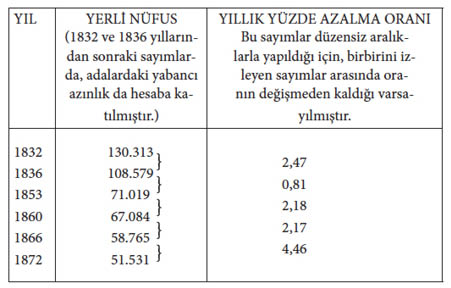

Yedinci Bölüm
İNSAN IRKLARI ÜZERİNE
Türsel ıraların niteliği ve değeri • İnsan ırklarına uygulanması • Sözde insan ırklarının ayrı türler gibi sınıflanmasını destekleyen ve engelleyen kanıtlar • Alt-türler • Tekkökenciler ve çokkökenciler • Iranın yakınsaması • En farklı insan ırkları arasındaki vücut ve zihin benzerliğinin çeşitli yönleri • İnsanın yeryüzüne ilk yayıldığı zamanki durumu • Her ırk bir tek çiftten türememiştir • Yaşama koşullarının dolaysız etkisinin önemsiz izleri • Doğal seçmenin hafif etkisi ya da etkisizliği • Eşeysel seçme.
Burada çeşitli sözde insan ırklarını tanımlamak niyetinde değilim; ama sınıflama açısından onlar arasındaki farkların ne değeri olduğunu ve nasıl doğduklarını araştırmak istiyorum. İki ya da daha çok hısım biçimin türler ya da çeşitler olarak mı sınıflanmak gerektiğini belirlerken, doğa bilginlerinin pratikte dikkate aldıkları noktalar şunlardır: Onlar arasındaki farkın tutarı; ve böyle farkların yapının birkaç noktası ile mi, yoksa birçok noktası ile mi ilişkili olduğu; bunların fizyolojik bakımdan önemli olup olmadığı; ve özellikle, bu farkların değişmez olup olmadığı. Iranın değişmezliği, doğa bilginlerinin özellikle önemsediği ve aradığı şeydir. Üzerinde çalışılan biçimlerin uzun bir dönem farklı kaldığı gösterilebilince, ya da umulur duruma getirilince, bu, onları birer tür olarak sınıflamada çok önemli bir gerekçe olmaktadır. Herhangi iki biçimin ilk çaprazlandıkları zaman biraz kısırlık göstermesi, ya da döllerinin biraz kısır olması bile, genellikle, onların türsel başkalıklarının kesin ölçüsü sayılmaktadır; aynı alanda sürekli olarak birbirleri ile kaynaşmadan kalmaları çoğu zaman, ya belirli bir ölçüde karşılıklı kısırlığın, ya da, hayvanlarda, çiftleşmeye karşıtlığın yeter kanıtı sayılmaktadır.
Çaprazlanmadan doğan kaynaşmadan ayrı olarak, iyi incelenmiş bir bölgede, yakın hısım olan iki biçimi birbirine bağlayan çeşitlerin hiç bulunmaması, belki onların türsel başkalıklarının en önemli ölçütüdür; ve bu, ıranın yalnızca değişmez olmasından biraz farklı bir gerekçedir; çünkü iki biçim çok değişken olabilir ve yine de ara çeşitler vermeyebilir. Coğrafi dağılım, sık sık bilinçsiz olarak ve bazen bilinçli olarak işe karıştırılmaktadır; öyle ki, başka canlıların pek çoğunun türsel bakımdan farklı olduğu apayrı iki alanda yaşayan biçimlere çoğu zaman farklı gözüyle bakılmaktadır; oysa bu coğrafi ırkları sözde iyi ya da gerçek türlerden ayırt etmede gerçekten yararsızdır.
Şimdi, insanı tıpkı bir doğa bilgininin herhangi bir hayvana baktığı gözle inceleyerek, genellikle kabul edilen bu ilkeleri insan ırklarına uygulayalım. Irklar arasındaki fark tutarı konusunda, öteden beri kendi kendimizi gözleme alışkanlığı ile kazandığımız o keskin ayırt etme yetimizi biraz hesaba katmalıyız. Hindistan’da, Elphinstone’nun belirttiği gibi, oraya yeni gelmiş bir Avrupalı, çeşitli yerli ırkları önce birbirinden ayırt edemez, ama onların pek benzemez olduklarını çabucak görür;353 bir Hintli de, çeşitli Avrupa ulusları arasında önce hiçbir fark göremez. En farklı insan ırkları bile, biçim bakımından, ilk bakışta sanıldığından çok daha birbirine benzerdir; yalnız belirli zenci boylar ayrı tutulmalıdır, öbürleri, Dr. Rohlfs’un bana yazdığı ve benim kendi gözlerimle gördüğüm gibi, Kafkasyalı (Caucasian) özellikler gösterir. Çeşitli ırklardan olan insanların Collection Anthropologique de Muséum de Paris’deki fotoğrafları, bu genel benzerliği çok güzel göstermektedir. Bu insanların çoğu, fotoğraflarını kendilerine gösterdiğim birçok kimsenin de söylediği gibi, Avrupalı geçinebilirdi. Bununla birlikte, bu insanların, kendileri bize elbette çok farklı görünürdü; çünkü derinin ve saçın yalnızca rengi, yüzdeki ufak tefek farklar ve anlam, yargılarımızı kolayca ve çok etkilemektedir.
Yine de, dikkatle karşılaştırıldıkları ve ölçüldükleri zaman, çeşitli ırkların, örneğin saç oluşumu, vücudun bütün parçalarının birbirine göre oranı,354 akciğerlerin sığası, kafatasının sığası ve biçimi, ve beynin kıvrımları bakımından bile,355 birbirinden farklı oldukları besbellidir. Irklar, vücudun yapılışı, iklime uyma (acclimatisation) ve belirli hastalıklara karşı duyarlık bakımından da farklıdır. Duygusal yetilerinde özellikle, ama zihinsel yetilerinde bir dereceye kadar görüldüğü gibi, ruhsal nitelikleri de çok ayrıdır. Karşılaştırma fırsatı bulmuş herkes, Güney Amerika’nın suskun, hatta somurtkan yerlileri ile kaygısız, geveze zenciler arasındaki karşıtlığa şaşmış olmalıdır. Aynı fiziksel koşullarda yaşayan ve birbirinden yalnız dar bir denizle ayrılan Malayalılar ile Papuanlar arasında da buna pek benzer bir karşıtlık vardır.356
Önce insan ırklarını ayrı türler olarak sınıflamak için ileri sürülebilecek gerekçelerden, sonra da karşı görüşün gerekçelerinden söz edelim. Daha önce hiç Zenci, Hotanto, Avustralyalı, Moğol görmemiş bir doğa bilgini onları karşılaştırmak durumunda kalsaydı, bazıları önemsiz ve bazıları önemli olan ıralarının çoğunda, birbirlerine benzemediklerini görüverirdi. Araştırması sırasında, onların çok farklı iklimlere uyarlandıklarını, vücut yapısı ve ruh düzeni bakımından biraz farklı olduklarını bulurdu. Sonra kendisine aynı ülkelerden bunlara benzeyen yüzlerce örnek getirebileceği bildirilseydi, onların, türsel adlar vermeye alışageldiği birçokları kadar yetkin türler olduğunu kesinlikle söylerdi. Bu biçimlerin yüzyıllardır aynı ırada kaldıklarını, görünüşte bugünkü zencilerle özdeş zencilerin hiç değilse 4.000 yıl önce yaşamış olduğunu357 öğrenir öğrenmez, bu kararı büyük ölçüde kuvvetlenirdi. Bu doğa bilgini, yetkin bir gözlemci olan Dr. Dund’dan,358 Brezilya’daki mağaralarda, artık soyu tükenmiş birçok memeli hayvanla birlikte gömülmüş ve bugün bütün Amerika kıtasında başat olan tipe giren insan kafatasları bulunduğunu da işitirdi.
Doğa bilginimiz daha sonra belki coğrafi dağılım üzerinde durur, bu biçimlerin yalnız görünüşte farklı olmayıp, sıcak ülkeler gibi, nemli ya da kurak ülkelere, ve Arktik bölgelere de uyarlanmış ayrı türler olmak gerektiğini bildirirdi. İnsana en yakın gruptaki –yani dört-ellilerdeki (Quadrumana)– hiçbir türün, düşük sıcaklıklara, ya da önemli hiçbir iklim değişmesine dayanamaması; insana en yakın türlerin, Avrupa’nın ılıman ikliminde bile asla ergenlik çağına dek yetiştirilememesi olgusunu da kanıt gösterebilirdi. İlk kez Agassiz’in359 gözüne çarpan olgu, yani, farklı insan ırklarının yeryüzünde memelilerin kesinlikle ayrı türlerinin ve cinslerinin yaşadığı hayvanbilimsel bölgelere yayılmış olması, onu derinden etkilerdi. Avustralyalı, Moğol ve Zenci insan ırkları için durum budur; Hotantolar için daha az belirgin olarak ama Bay Wallace’ın gösterdiği gibi, büyük Malaya ve Avusturalya hayvanbilimsel bölgelerini ayıran çizginin aşağı yukarı aynı ile birbirinden ayrılan Papuanlar ve Malayalılar için açıkça böyledir. Amerika yerlileri, bu kıtanın her yanına yayılmıştır; ve bu, ilk bakışta, yukarıdaki kurala aykırı görünmektedir; çünkü Kuzey ve Güney Amerika’nın ürünlerinin pek çoğu, büyük ölçüde farklıdır; bununla birlikte, yaşayan biçimlerden birkaçı, örneğin opossum [bir keseli-sıçangil türü –ç.], bazı dev dişsizlerin (gigantic Edentata) eskiden yaptığı gibi, Amerikaların birinden öbürüne yayılmıştır. Eskimolar, öbür Arktik hayvanlar gibi, bütün kutup bölgelerine dağılmışlardır. Çeşitli hayvanbilimsel bölgelerin memelileri arasındaki fark tutarının, o bölgeler arasındaki farkın derecesine uymadığına dikkat edilmelidir. Bundan ötürü, Afrika’daki ve Amerika kıtalarındaki memelilerin öbür bölgelerdeki memelilerden farklılığına oranla, zencinin öbür insan ırklarından daha çok ve Amerikalının daha az farklı olmasını bir sapkınlık saymak güçtür. İnsanın, başlangıçta, herhangi bir okyanus adasında yaşamış olduğunu gösterir belirtiler bulunmadığı, bu bakımdan, sınıfın öbür üyelerine benzediği de bunlara eklenebilir.
Aynı evcil hayvan türünün varlığı kabul edilmiş çeşitlerinin böyle mi, yoksa türsel bakımdan farklı olarak mı sınıflanmak gerektiğini, yani onların bazılarının farklı yaban türlerinden türemiş olup olmadığını belirlerken, her doğa bilgini, onların dış asalaklarının ayrı türlerden olmasına çok önem verirdi. Ayral (istisnai) bir durumla karşılaşınca, bu olguya daha da çok önem verilirdi; çünkü Bay Denny’in bana bildirdiğine göre, İngiltere’deki en farklı köpek, kanatlı kümes-hayvanları, ve güvercin çeşitlerinde, aynı bit türlerine rastlanmaktadır. Bay Muray, farklı ülkelerdeki farklı insan ırklarından derlediği bitleri dikkatle incelemiş;360 ve onların yalnız renk bakımından değil, bacakları ve öbür uzantıları bakımından da farklı olduklarını bulmuştur. Birçok örnek bulunan her durumda, farklar değişmemekteydi. Pasifik’teki bir balina gemisinin cerrahı, bana birkaç Sandwich Adalı ile bir gemiye giren bitlerin İngiliz denizcilerinin vücutlarına geçince, iki-üç günde öldüğünü anlatmıştı. Bu bitler, cerrahın bana örneklerini verdiği Şili yerlilerine özgü bitlerden daha koyu renkliydi ve onlara benzemiyordu. Bundan başka, aynı bitler, Avrupa bitlerinden daha iri ve çok daha yumuşak görünmekteydi. Bay Murray Afrika’dan, doğu ve batı kıyılarındaki Zencilerden, Hotantolardan ve Kafirlerden dört; Avustralya yerlilerinden iki, Kuzey ve Güney Amerika’dan iki olmak üzere, sekiz bit örneği getirtti. Son örnekteki bitlerin ayrı bölgelerde yaşayan yerlilerden alınmış olduğu söylenebilir. Böceklerdeki önemsiz yapılış farkları, değişmez iseler, genellikle türsel nitelikte sayılırlar. Ve insan ırklarının türsel bakımdan farklı görünen asalaklardan zarar görmesi olgusu, ırkların kendilerinin ayrı türler gibi sınıflanmak gerektiğine, haklı olarak, kanıt gösterilebilirdi.
Varsaydığımız doğa bilgini, araştırmasını bu kadar ilerlettikten sonra, insan ırklarının çaprazlandıkları zaman herhangi bir ölçüde kısır olup olmadıklarını sorardı. Dikkatli ve düşünceli bir gözlemci olan Prof. Broca’nın kitabına361 başvurabilirdi, ve o kitapta bazı ırkların birbirleri ile çaprazlanınca gerçekten döl verdiğini gösteren kanıtlar bulurdu, ama başka ırklarla ilgili olarak, karşıt kanıtlara da rastlardı. Böylece, Avustralyalı ve Tasmanyalı yerli kadınların Avrupalı erkeklerden seyrek olarak çocuk doğurduğunu öğrenmiş olurdu. Ancak, bu konudaki kanıtların değersiz olduğu gösterilmektedir. Katışıksız kara ırktan olanlar, yarı-karaları (half-castes) öldürmektedir: On bir yarı-kara gencin öldürülüp yakıldığını, kalıntılarının polisçe bulunduğunu bildiren bir haber bu yakınlarda yayınlanmıştır.362 Bundan başka, birbiriyle evlenen kırmaların (mulatto) pek az çocuğu olduğu sık sık söylenmektedir; öte yandan, Charlestonlu Dr. Bachman363 birkaç kuşaktır kendi aralarında evlenen, ve ortalama olarak katışıksız aklar ya da karalar kadar döl veregelen kırma aileler tanıdığını kesinlikle ileri sürmektedir. Bana bildirdiğine göre, daha önce Sir C. Lyell’in bu konudaki araştırmaları da aynı sonuca varmıştır.364 Dr. Bachman’a göre ABD’de 1854 nüfus sayımında, 405.751 kırma (mulatto) saptanmıştır; ve bu sayı, olgu her yönüyle incelenirse, küçük görünmektedir; ama kısmen bu sınıfın aşağı ve kural-dışı durumunun, ve kadınlarının uçarılığının sonucu sayılabilir. Kırmalar zencilerin içinde, belirli bir oranda ve sürekli eriyor olmalıdır; ve bu onların görünür eksilmesine yol açmaktadır. Güvenilir bir kitapta,365 kırmaların yaşama güçlerinin azaldığından, çok bilinen bir olay gibi söz edilmektedir; ve bu onların azalmış doğurganlığının başka bir sonucu olmakla birlikte, belki ana-baba ırkların türsel başkalığının bir kanıtı olarak ileri sürülebilir. Kuşkusuz aşırı farklı türlerden elde edilen hayvan ve bitki hibritleri, vakitsiz ölmeye doğuştan eğilimlidir; ama kırmaların ana-babaları aşırı farklı türler sayılamaz. Uzun ömürlü ve dinç, ama kısır olması ile ünlü bayağı katır, hibritlerde azalmış doğurganlık ile yaşama gücü arasındaki ilişkinin ne kadar az zorunlu olduğunu göstermektedir; benzer başka örnekler de gösterilebilir.
İleride, bütün insan ırklarının birbirleriyle birleşince tam döl verimi gösterdiği kanıtlansaydı bile başka nedenlerden ötürü onları ayrı türler olarak sınıflamaya eğilimli olan kimseler, doğurganlığın ve kısırlığın türsel farklılığın güvenilir ölçütü olmadığını haklı olarak savunurlardı. Bu niteliklerin değişmiş yaşama koşullarından ya da tam melezlemeden kolayca etkilendiğini, çok karmaşık yasalara bağlı olduğunu, örneğin, aynı iki tür arasındaki karşıt çaprazların (converse cross) doğurganlıklarının eşit olmadığını biliyoruz. Kuşkusuz türler olarak sınıflanmak gereken biçimler, çaprazlanınca kesinlikle kısır olanlardan epey ya da tümü ile doğurgan olanlara dek eksiksiz bir sıralanma göstermektedir. Kısırlık dereceleri, ana-babanın dış yapıları ya da huyları arasındaki farkın derecesiyle tam uyuşmamaktadır. İnsan, birçok bakımdan, uzun zaman önce evcilleştirilmiş hayvanlarla karşılaştırılabilir, ve evcilliğin doğal durumdaki türlerin çaprazlanmasının pek genel bir sonucu olarak döl verimsizliğinin giderilmesine yol açtığını ileri süren Pallas öğretisini doğrulayan bir yığın kanıt gösterilebilir.366 Bu çeşitli nedenlerden ötürü, haklı olarak, şu ileri sürülebilir: Çaprazlanmış insan ırklarının gereği gibi döl vermesi –böyle olduğu saptansaydı bile– onları ayrı türler olarak sınıflamamıza kesinlikle engel olamazdı.
Döl verimliliğinden başka, çaprazlanma ürünü olan döllerin gösterdiği ıraların, ana-baba biçimlerin türler ya da çeşitler olarak sınıflanmak gerekip gerekmediğini bildirdiği sanılmıştır; ama bu konudaki kanıtları dikkatle inceledikten sonra, bu türlü genel kuralların hiçbirine güvenilemeyeceği sonucuna vardım. Bir çaprazlanmanın olağan sonucu, karışık ya da ara bir biçimin doğmasıdır; ama belirli durumlarda, döllerin bazıları ana-baba biçimlerden birine, bazıları da öbürüne çok benzer. Bu, özellikle ana-babalar önce ani değişimler ya da yaradılış aykırılıkları (monstrosity) olarak belirmiş ıralar bakımından farklı olunca görülür.367 Bu noktayı özellikle belirtiyorum, çünkü Dr. Rohlfs, bana bildirdiğine göre, Afrika’da başka ırkların üyeleri ile çaprazlanmış zencilerin döllerinin ya tümü ile kara, ya tümü ile ak, ya da, seyrek olarak, alaca (piebald) olduğunu sık sık görmüştür. Öte yandan, Amerika’daki kırmaların genellikle iki ırk arası bir görünüşte olduğunu herkes bilir.
Görüyoruz ki, bir doğa bilgini insan ırklarını ayrı türler olarak sınıflarken kendini tümü ile haklı bulabilirdi; çünkü onların yapılış ve huy bakımından çok sayıda ve bazısı önemli farkları olduğunu saptardı. Üstelik bu farklar, çok uzun çağlardan beri, aşağı yukarı hiç değişmeden kalmıştır. Doğa bilginimiz, insanın yayılma alanının pek geniş olmasından da biraz etkilenecekti. Çünkü bu, insan soyuna bir tek tür gözüyle bakılırsa, memeliler sınıfında, büyük bir sapkınlıktır. Çeşitli sözde ırkların dağılımı ve kesinlikle farklı öbür memeli türlerin dağılımı arasındaki uygunluk, onu şaşırtacaktı. Sonunda, doğa bilginimiz, bütün ırkların karşılıklı döl verimliliğinin henüz tam olarak sınanmadığını, sınansa bile, onların türsel özdeşliğinin kesin kanıtı olmayacağını ileri sürebilirdi.
Sorunun öbür yanına gelince, varsaydığımız doğa bilgini, aynı ülkede ve büyük kalabalıklar halinde birbiriyle karışan insan biçimlerinin de, bayağı türler gibi farklı olmadığını buluverirdi. Brezilya’da Zenci-Portekiz melezlerinin pek kalabalık bir nüfus oluşturduğunu, Güney Amerika’nın başka bir kesiminde, Şili’de, bütün nüfusun çeşitli oranlarda karışmış yerlilerden ve İspanyollardan oluştuğunu görürdü.368 Aynı kıtanın birçok kesiminde, Zenciler, Yerliler ve Avrupalılar arasındaki en karmaşık çaprazlanmaların ürünlerine rastlandı. Bitkiler âlemindeki incelemelere göre, böyle üçlü çaprazlanmalar, ana-baba biçimlerin karşılıklı döl verimliliğinin en sıkı biçimde sınanmasıdır. Doğa bilginimiz, Pasifik adalarından birinde, Polinezyalı kanı ile İngiliz kanının karışmasından doğmuş küçük bir halkla; Fiji takımadalarında, Polinezyalılarla Cüce Zencilerin (Negrito) her oranda çaprazlanmasından doğmuş bir halkla karşılaşırdı. Örneğin Afrika’dan da buna benzer birçok örnek verilebilirdi. Bundan ötürü insan ırkları aynı ülkede birbirleriyle kaynaşmadan yaşamalarına elverir ölçüde farklı değildir; oysa kaynaşmanın gerçekleşmemesi, türsel farklılığın olağan ve en iyi ölçüsüdür.
Doğa bilginimiz, bütün ırkların ayırt edici ıralarının çok değişken olduğunu anlayınca da şaşırırdı. Bu olgu, Brezilya’da Afrika’nın dört bir yanından getirilmiş Zenci köleleri ilk gören herkesi şaşırtır. Bu, Polinezyalılar ve öbür ırkların çoğu için de geçerlidir. Herhangi bir ıranın bir ırka özgü ve değişmez olduğunun söylenip söylenemeyeceğinden kuşkulanılabilir. Aynı boydaki yabanıl insanlar bile, ıraları bakımından, sık sık söylendiği kadar bir-biçimli (uniform) değildir. Hotanto kadınlarında ortaya çıkan belirli özellikler, herhangi bir başka ırkta görülenlerden çok daha göze çarpıcıdır, ama bunların değişmeden ortaya çıkmadığı bilinmektedir. Çeşitli Amerikan boylarında, renk ve kıllılık oldukça farklıdır; Afrika Zencilerinde de, renk belirli bir ölçüde, ve yüz çizgileri ise büyük ölçüde farklıdır. Kafatasının biçimi bazı ırklarda çok değişmektedir;369 ve öbür ıraların hepsi de böyledir. Artık bütün doğa bilginleri, türleri, değişir ıraların yardımı ile belirlemeye çalışmanın büyük düşüncesizlik olduğunu pahalıya malolmuş deneylerle öğrenmişlerdir.
Ama insan ırklarının ayrı türler olarak sınıflanmasına karşı en önemli gerekçe, onların, birbirleriyle çaprazlanmalarının dışında da, birçok durumda, azar azar birbirine dönüşmesidir. İnsan herhangi bir hayvandan çok daha dikkatle incelenmiştir, yine de en yetenekli bilirkişiler arasında insanın bir tek tür ya da ırk olarak mı, yoksa iki (Virey), üç (Jacquinot), dört (Kant), beş (Blumenbach), altı (Buffon), yedi (Hunter), sekiz (Agassiz), on bir (Pickering), on beş (Bory St. Vincent), on altı (Desmoulins), yirmi iki (Morton), altmış (Crawfurd) ya da altmış üç (Burke) tür ya da ırk olarak mı sınıflanmak gerektiği konusunda büyük ayrılıklar vardır.370 Yargılardaki bu başkalık, ırkların türler olarak sınıflanmak gerektiğini değil, onların azar azar birbirine değiştiğini, ve onlar arasında açıkça ayırt edici ıralar bulabilmenin güç olduğunu gösterir.
Çok değişen organizmalardan oluşmuş bir grubu tanımlama işini yüklenmek talihsizliğine uğrayan her doğa bilgini, kesinlikle insanınkine benzer durumlarla karşılaşır (deneyime dayanarak konuşuyorum); sakıngan bir kimse ise, azar azar birbirine değişen biçimleri bir tek türde birleştirerek işini bitirecektir; çünkü, tanımlayamadığı nesnelere adlar vermeye hakkı olmadığını kendi kendine itiraf edecektir. İnsanın da bulunduğu takımda (order), yani gerçek-maymunların belirli cinslerinde (genera), böyle olgularla karşılaşılır; oysa öbür cinslerde örneğin uzun-kuyruklu maymunlarda (Cercopithecus) türlerin pek çoğu kesinlikle belirlenebilir. Amerikan Cebus cinsinin farklı biçimlerini kimi doğa bilginleri türler, kimileri ise yalnızca coğrafi ırklar olarak sınıflamaktadır. Demek ki, Güney Amerika’nın dört bir yanında sayısız Cebus örnekleri derlenseydi ve bugün türsel olarak farklı görünen biçimlerin çok sık basamaklarla azar azar birbirine değiştiği anlaşılsaydı, o biçimler çoğunlukla yalnızca çeşitler ya da ırklar olarak sınıflanırdı; doğa bilginlerinin pek çoğu, insan ırkları için de bu yolu izlemektedir. Bununla birlikte, tür olarak adlandırmaktan kaçamadığımız, ama çaprazlanmadan bağımsız olarak sayısız basamaklarla birbirine bağlanan biçimlerin hiç değilse bitkiler âleminde bulunduğu itiraf edilmelidir.371
Kimi doğa bilginleri, son zamanlarda, gerçek türlerin ayırıcı özelliklerinin çoğunu taşıyan, ama böyle yüksek bir aşamaya pek uygun düşmeyen biçimleri belirtmek için “alt-tür” (sub-species) terimini kullanmaktadırlar. Öyleyse, insan ırklarını tür aşamasına yükseltmek için yukarıda verilen sağlam gerekçeleri ve öte yandan onları belirlemenin başa çıkılmaz güçlüklerini düşünürsek, “alt-tür” terimi burada özellikle kullanılabilir gibi görünmektedir. Ama eski alışkanlıktan ötürü, “ırk” (race) terimi belki de hep kullanılagidecektir. Terimlerin seçimi, ancak aynı fark dereceleri için aynı terimler kullanılmak istendiği ölçüde önemlidir. Ne yazık ki bu seyrek olarak başarılabilmektedir; çünkü, daha büyük cinsler, genellikle, ancak büyük güçlükle ayırt edilebilen ve birbirleri ile yakın hısım olan biçimleri kapsar, oysa aynı familyadan olan daha küçük cinsler tam anlamı ile farklı biçimleri kapsamaktadır; bununla birlikte, hepsini, fark gözetmeden, türler olarak sınıflamak gerekmektedir. Bundan başka, aynı büyük cinsteki (genus) türler, birbirlerine asla eşit ölçüde benzemez; tersine, bunların bazıları, genellikle, öbür türlerin çevresine küçük gruplar konumunda, gezegenlerin çevresindeki uydular gibi, sıralanabilir.372
Tekkökenci (monogenist) ve çokkökenci (polygenist) olmak üzere iki okula ayrılmış bulunan insanbilimciler, son yıllarda, insan soyunun bir türden mi, yoksa birkaç türden mi oluştuğunu tartışmaktadırlar. Evrim ilkesini benimsemeyenler, türlere ayrı yaratılar (creation) ya da bir bakıma farklı kendilikler (mahiyet, entity) gözüyle bakmak, ve öbür organik varlıkları türler olarak sınıflamada kullanılan yöntemin örneksenmesiyle hangi insan biçimlerini (form) tür sayacaklarına karar vermek zorundadırlar. Ama bu noktada karara varmak, “tür” teriminin herhangi bir tanımı genellikle kabul edilinceye dek, umutsuz bir çabadır; ve tanım yaratma eylemi gibi belirsiz bir öğeyi içermemelidir. Hiçbir tanım olmadan, belirli sayıdaki evlere köy, kasaba, kent demeye de kalkışabilirdik. Kuzey Amerika’da ve Avrupa’da karşılıklı olarak birbirini temsil eden ve birbirleriyle yakın hısım olan memelilerin, kuşların, böceklerin ve bitkilerin türler olarak mı, yoksa coğrafi ırklar olarak mı sınıflanmak gerektiği konusundaki o bitip tükenmez kuşkularda bu güçlüğün uygulamada karşılaşılan bir örneğini görüyoruz; ve bu, en yakın kıtadan pek az uzakta bulunan birçok adanın ürünleri için de geçerlidir.
Öte yandan, yeni yetişenlerin artık çoğunlukla benimsediği evrim ilkesini benimseyen doğa bilginleri, insan ırkları arasındaki fark tutarını belirtmek amacı bakımından onların ayrı türler denmeye uygun olduğunu düşünseler de, düşünmeseler de, bütün insan ırklarının bir tek ilkel kökenden türemiş olduğundan hiç kuşkulanmazlar.373 Evcil hayvanlarımızın çeşitli ırklarının bir türden mi yoksa birden çok türden mi türedikleri sorunu biraz farklıdır. Aynı cinsteki bütün doğal türler gibi, bütün ırkların da aynı ilkel kökenden fışkırdığı kabul edilebilirse de, örneğin köpeğin bütün evcil ırklarının bugün aralarında görülen fark tutarını insanın herhangi bir türü ilk evcilleştirmesinden sonra kazanıp kazanmadıkları; ya da ıralarının bazılarını artık doğal durumda farklılaşmış olarak bulunan başka türlerden gelmeye borçlu olup olmadıkları, henüz tartışmaya değer bir konudur. İnsana gelince, böyle bir sorunla karşılaşılamaz, çünkü onun herhangi bir dönemde evcilleştirildiği söylenemez.
İnsan ırklarının ortak bir kökenden ayrılmasının erken bir aşamasında, ırklar arasındaki farkların ve fark sayısının az olması gerekir; bunun sonucu olarak, o zamanki ırklar, ayırt edici ıraları bakımından, ayrı türler olarak sınıflanmaya bugünkü sözde ırklardan daha az yaraşır durumda idiler. Bununla birlikte, tür terimi öylesine keyfidir ki, böyle eski ırkların farkları aşırı önemsiz, ama bugünkünden daha değişmez, ve azar azar birbirine dönüşmez olsaydı bile, kimi doğa bilginleri onları ayrı türler olarak sınırlayabilirdi.
Yine de, insanın eski atalarının, bugün varolan ırkların her birinden daha çok birbirine benzemez duruma gelmeden önce ıraca birbirine çok ıraksamış olmaları şöyle dursun, sonradan, Vogt’un ileri sürdüğü gibi,374 ıraca birbirini yakınsamış olmaları belkili değildir, tersine olanaklıdır. İnsan iki ayrı türün döllerini aynı amaçla seçerken, genel görünüş söz konusu olduğu sürece; bazen önemli ölçüde yakınsamaya (convergence) yol açar. Von Nathusius’un belirttiği gibi,375 iki ayrı türden türemiş olan geliştirilmiş domuz soylarında, ve daha az belirgin olarak da, geliştirilmiş sıfır soylarında görülen budur. Büyük bir anatomici, Gratiolet, insan-biçimli maymunların doğal bir alt-grup oluşturmadığını, orangutanın çok gelişmiş bir jibon ya da semnopithecus, şempanzenin çok gelişmiş bir macacus, ve gorilin çok gelişmiş bir mandril olduğunu ileri sürmektedir. Aşağı yukarı tümü ile beyin ıralarına dayanan bu sonuç kabul edilirse, hiç değilse dış ıralarda bir yakınsama örneği ile karşı karşıyayız demektir; çünkü insan-biçimli maymunlar, birçok bakımdan, öbür maymunlara benzediklerinden daha çok ve kesinlikle birbirlerine benzemektedirler. Gerçekte, balinanın balığa benzerliği gibi olan bütün görevdeş benzerliklerin*, yakınsama örnekleri olduğu söylenebilir; ama bu terim yüzlek ve uyarlanır (adaptive) benzerlikler için hiç kullanılmamıştır. Bununla birlikte, çok farklı varlıkların değişikliğe uğramış döllerinde, yapının birçok noktasındaki ıranın yakın benzerliğini yakınsamaya yormak, aşırı ataklık olurdu. Bir kristalin biçimini özellikle belirleyen, molekül kuvvetleridir, ve benzemez maddelerin bazen aynı biçimi göstermesi şaşırtıcı değildir; ama her organik varlığın biçiminin karmaşık pek çok ilişkiye –fiziksel koşullara ve daha çok da onları kuşatan ve onların her biriyle yarışan organizmalara bağlı olarak saklanan değişimlerin niteliğine–, ve son olarak, hepsinin biçimi aynı ölçüde karmaşık ilişkilerle belirlenmiş sayısız atalardan soyaçekime (ki soyaçekim başlıbaşına kararsız bir öğedir) bağlı olduğu unutulmamalıdır. Belirgin bir biçimde birbirinden farklılaşmış iki organizmanın değişikliğe uğramış döllerinin, daha sonra, organlanmalarının tümünde nerdeyse özdeşliğe varacak kadar yakınsaması, inanılmaz görünmektedir. Yukarıda anılan yakınsamış domuz ırklarından, Von Nothusius’a göre, onların iki ayrı kökenden gelmelerinin kanıtı, kafataslarındaki belirli kemiklerde hâlâ açıkça görülmektedir. Şundan kuşkulanmak güçtür: Kimi doğa bilginlerinin sandığı gibi, insan ırkları, orangutanın gorile benzemediği kadar çok, ya da aşağı yukarı o kadar, birbirine benzemeyen iki ya da ikiden çok türden türemiş olsaydı, bugünkü insanın belirli kemiklerinin yapılışında belirgin farklar bulunurdu.
Bugünkü insan ırkları, renk, saç, kafatası biçimi, vücut oranları, vb. gibi birçok bakımdan farklı olmakla birlikte, yapılarının tümü dikkate alınırsa, pek çok noktada birbirlerine büyük ölçüde benzemektedirler. Bunların birçoğu öylesine önemsiz ya da apayrı bir niteliktedir ki, kökenleri başka olan türlerin ya da ırkların onları ayrıca kazanmış olması, son derece olanaksızdır. Aynı düşünce, en farklı insan ırkları arasındaki zihinsel benzerliğin pek çeşitli yönleri için de, aynı ölçüde ya da daha çok geçerlidir. Amerika yerlileri, Zenciler ve Avrupalılar kafaca, anılabilecek herhangi üç ırk kadar birbirlerinden farklıdır; bununla birlikte, “Beagle”da Ateş Ülkelilerle birlikte bulunduğum sıralarda, onların zihinlerinin bizimkine ne kadar çok benzediğini gösteren küçük birçok belirti, beni sürekli olarak şaşırtmıştı; bir zamanlar yakın arkadaşlık ettiğim su katılmadık bir Zencide de bunu gözlemiştim.
Bay Tylor’un ve Sir J. Lubbock’un ilginç kitaplarını376 okuyan kimsenin, her ırktan insanların beğenileri, eğilimleri ve alışkanlıkları arasındaki yakın benzerlikten etkilenmemesi güçtür. Hepsinin de danstan, kaba müzikten, rol yapmaktan, resimden, dövmeden ve başka biçimde bezenmekten hoşlanması; işaretlerle karşılıklı anlaşması, aynı heyecanlara kapılınca yüzlerinde aynı anlamın belirmesi, ve hepsinin aynı eklemsiz (inarticulate) çığlıkları atması, bu yakın benzerliğin kanıtıdır. Bu benzerlik, daha doğrusu özdeşlik, ayrı maymun türlerinin farklı anlatımları ve çığlıkları ile karşılaştırılınca, şaşırtıcıdır. Ok ve yay kullanma sanatının insan soyunun ortak bir atasından beri kuşaktan kuşağa aktarılmadığını gösteren sağlam kanıtlar vardır, ama Westropp’un Nilsson’ın belirttiği gibi,377 dünyanın birbirine en uzak kesimlerinden getirilmiş, ve en eski dönemlerde yapılmış taştan temrenler, aşağı yukarı özdeştir; ve bu olgu, yalnız çeşitli ırkların benzer yaratıcı ya da zihinsel yetileri olması ile açıklanabilir. Arkeologlar, çok yaygın bezemelerde, örneğin zikzaklarda, vb., çeşitli basit inançlarda ve geleneklerde, örneğin ölüyü iri taşlı (megalithic) yapıların altına gömmede, aynı olguyu gözlemişlerdir.378 Güney Amerika’da, dünyanın başka birçok kesiminde olduğu gibi, insanların ya önemli bazı olayları belgelendirmek amacı ile taşlar yığmak, ya da ölülerini gömmek için genellikle yüksek tepelerin doruklarını seçtiklerini anımsıyorum.379
Bugün doğa bilginleri, alışkanlıkların, beğenilerin, eğilimlerin küçük sayısız ayrıntıları bakımından iki ya da daha çok evcil ırk arasında, ya da yakın hısım olan doğal biçimler arasında sıkı bir uyuşma gözledikleri zaman, bu olguyu onların ortak bir atadan türemiş olmalarının, ve, bundan dolayı da, hepsinin aynı türden sayılmak gerektiğinin kanıtı olarak kullanmaktadırlar. Aynı gerekçeye insan ırklarında daha da kolay başvurulabilir.
Vücut yapısı ve zihinsel yetiler bakımından çeşitli ırklar arasında görülen sayısız ve önemsiz benzerlikler (burada benzer gelenekleri anmıyorum), ayrı ayrı kazanılmış olamayacağı için, onların aynı ıraları taşımış bir atadan soyaçekilmiş olması gerekir. Böylece, insanın yeryüzüne adım adım yayılmasından önceki durumunu biraz kavrıyoruz. İnsanın denizle birbirinden çok ayrılmış bölgelere yayılması, kuşkusuz, çeşitli ırklarda ıranın büyük ölçüde ıraksamasına (devergence) yol açmıştır; böyle olmasaydı, aynı ırka bazen ayrı kıtalarda rastlamamız gerekirdi; oysa durum asla böyle değildir. Sir J. Lubbock, dünyanın bütün kesimlerindeki yabanıl insanların bugün uğraştıkları sanatları karşılaştırdıktan sonra, insanın ilk doğum yerinden ilk ayrıldığı sırada biliyor olamayacağı sanatları belirlemiştir; çünkü o sanatlar bir kez öğrenilseydi, asla unutulmazdı.380 Sir J. Lubbock, böylece, “bıçak ucunun yalnızca bir gelişimi olan mızrağın, uzun bir çekiçten başka bir şey olmayan topuzun, artakalan biricik nesneler” olduğunu göstermiştir. Bununla birlikte, ateş yakma sanatının önceden bulunmuş olabileceğini kabul etmektedir; çünkü bugün varolan bütün ırklar ateş yakmayı bilmektedir, ve Avrupa’nın eski mağara adamları da ateş yakmayı biliyordu. Belki kaba saba kayıklar ve sallar yapma sanatı da biliniyordu; ama insan karaların birçok yerde bugünkünden çok farklı bir düzeyde olduğu eski bir çağda varolduğu için, kayıklardan yararlanmadan da uzaklara yayılmış olabilir. Sir J. Lubbock, daha sonra, “bugün varolan ırkların pek çoğunun ancak dörde kadar” sayabilmesini söz konusu ederek, “en eski atalarımız ona kadar saymış olamaz” demektedir. Bununla birlikte, o eski dönemde, insanın zihinsel ve toplumsal yetileri, bugün yaşayan en aşağı yabanıllarınkilerden pek az gelişmiş olamaz; yoksa ilk insan, çabucak ve çok yayılmış olmasının da gösterdiği gibi, yaşama savaşında çok üstün başarılı olamazdı.
Kimi filologlar, belirli diller arasındaki köklü farklardan, insanın ilk kez geniş çapta yayıldığı sıralarda, konuşan bir hayvan olmadığı sonucunu çıkarmaktadırlar; ancak, bugün konuşulanların hepsinden çok daha az yetkin olan dillerin, işaretlerle desteklenerek kullanılmış olduğu, ve onların ürünü olan çok daha gelişmiş dillerde bunların hiçbir izinin kalmadığı sanılabilir. Eksik de olsa, hiçbir dil kullanılmadan, insan zekâsının, insanın eski bir dönemdeki egemen durumundan anlaşılan düzeye yükselip yükselemeyeceği kuşkuludur.
İlk insanın elinden ancak kaba saba birkaç iş geldiği sıralarda, ve konuşma yetisi pek eksik olduğu sıralarda, insan sayılmaya yaraşıp yaraşmadığı, kullandığımız tanıma bağlı olmak gerekir. Maymuna-benzer bir yaratıktan bugün yaşayan insana doğru hiç sezilmeksizin, azar azar değişen biçimlerden oluşmuş bir seride, “insan” teriminin kullanılmak gerektiği herhangi bir belirli nokta saptamak olanaksızdır. Ama bu, çok az önemli bir sorundur. Bundan başka, sözde insan ırklarının böyle denmeye mi, yoksa türler ya da alt-türler olarak sınıflanmaya mı yaraştığı da önemsiz bir sorundur; ama son terim daha uygun görülmektedir. Son olarak, evrim ilkesi genellikle kabul edilince –ki çok geçmeden kesinlikle kabul edilecektir– tekkökenciler (monogenist) ile çokkökenciler (polygenist) arasındaki kavganın sessizce ve sezilmeden sona ereceğini söyleyebiliriz.
Başka bir sorun, yani, her insan ırkının ya da alt-türünün yalnız bir çift atadan türeyip türemediği sorunu da dikkate alınmadan geçilmemelidir. Bazen, hepsinin bir çift atadan türediği ileri sürülmektedir. Evcil hayvanlarımızdan, yeni herhangi bir ırası olan bir tek çiftten, hatta bir tek bireyden alınan çeşitlenmiş döller dikkatle çiftleştirilerek ve amaçlanarak yeni bir ırk oluşturulabilir; ama evcil hayvan ırklarımızın pek çoğu, seçilmiş bir çiftten amaçlı olarak değil, tersine, az da olsa yararlı ya da istenen bir biçimde değişmiş birçok bireyin bilinçsiz olarak korunması ile oluşturulmuştur. Bir ülkede hep güçlü ve hantal atlar, başka bir ülkede hep ince ve çevik atlar üstün tutulsaydı, özellikle ayrılarak damızlıkta kullanılmış hiçbir çift olmadığı halde, zamanla o iki ülkede ayrı birer alt-ırk yetişeceğine güvenle inanabilirdik. Irkların birçoğu böyle oluşmuştur, ve onların oluşum yolu, doğal türlerinkine çok benzemektedir. Falkland adalarına götürülen atların ardışık kuşaklar boyunca ufalıp inceldiğini, oysa Pampalarda yabanlaşanların daha iri ve kaba başlı atlar haline geldiğini de biliyoruz; ve böyle değişikliklerin, herhangi bir çiftten değil, aynı koşulların belki ataya dönüş ilkesi ile de desteklenen etkisinde kalmış bütün bireylerden doğduğu bellidir. Böyle örneklerdeki yeni alt-ırklar, herhangi bir çiftten değil, farklı derecelerde, ama aynı genel yönde değişmiş birçok bireyden türemişlerdir; ve insan ırklarının da böyle türediği sonucunu çıkarabiliriz. Değişiklikler ya farklı koşulların etkisinde kalmanın dolaysız sonucudur, ya da herhangi bir seçme (selection) biçiminin dolaylı sonucudur. Ama bu son konuyu biraz sonra yeniden ele alacağız.
İNSAN IRKLARININ TÜKENMESİ ÜZERİNE
Birçok insan ırkının ya da alt-türünün tümüyle ya da bir kesimi ile tükenmesi, tarihsel bir gerçektir. Humboldt, Güney Amerika’da, yitip gitmiş bir boyun konuştuğu dilin bir sözcüğünü söyleyebilen tek canlı yaratık olan bir papağan görmüştür. Dünyanın her yerinde eski anıtlar ve taştan âletler bulunmuştur; bugün oralarda yaşayan insanların onlarla ilgili hiçbir geleneği olmaması, tükenmenin büyüklüğünü göstermektedir. Eski ırkların kalıntısı olan bazı küçük ve parçalanmış boylar çevreyle bağlantısız ve genellikle dağlık bölgelerde hâlâ yaşamaktadır. Avrupadaki eski ırklar, Schauffhausen’a göre,381 “bugün yaşayan en kaba saba yabanıllardan bile daha aşağı bir aşamada idi”; bundan ötürü, bugün varolan bütün ırklardan belirli bir ölçüde farklı olmaları gerekir. Prof. Broca’nın Les Eyzies’te rastladığı kalıntılar, bir tek ailenin torunları gibi görünmekte iseler de, aşağı ya da maymunsu özelliklerle yüksek niteliklerin eşsiz bir bileşimi olan bir ırkın varlığını göstermektedirler. Bu ırk, “bildiğimiz eski ya da çağdaş ırkların hepsinden tümü ile farklıdır”.382 Bundan ötürü, Dördüncü Zamanda, Belçika mağaralarında yaşamış olan ırktan da farklıdır.
İnsan, yaşamasına aşırı elverişsiz gibi görünen koşullara uzun süre dayanabilir.383 Kayıkları ya da âletleri için ağaç bulunmayan, yakıt olarak yalnız balıkyağının ve içecek olarak erimiş karın bulunduğu en uç Kuzey bölgelerinde uzun süre yaşamıştır. Ateş Ülkeliler, Amerika’nın en güney ucunda, hiç giyinmeden ve kulübe denebilecek bir barınakları bile olmadan yaşamaktadırlar. Güney Afrika yerlileri, yırtıcı hayvanlarla dolu kurak ovalarda dolaşıp durmaktadır. İnsan, Himalaya’nın eteklerindeki Terai’nin* öldürücü etkisine, ve tropikal Afrika’nın veba saçan kıyılarına da dayanabilir.
Tükenme, özellikle boyla boyun, ve ırkla ırkın yarışmasından ileri gelir. Her yabanıl boyun nüfusunun çoğalmasını önleyen çeşitli engeller, örneğin dönemli (periodical) kıtlıklar, göçebe yaşayışı ve bunun sonucu olarak çocuk ölümleri, çocukların çok geç memeden kesilmesi, savaşlar, kazalar, hastalıklar, aşırılıklar, kadın kaçırmalar, çocuk öldürmeler ve özellikle azalmış doğurganlık, her zaman etkisini göstermektedir. Bu engellerden herhangi birinin etkisi önemsiz ölçüde bile artsa, boyun azalmasına yol açar; ve iki komşu boydan biri, öbürüne oranla sayıca azalınca ve güçten düşünce, yarışma savaşla, kırımla, yamyamlıkla, kölelik ve soğurma (absorbtion) ile sona erdiriliverir. Daha zayıf bir boy böyle birdenbire yok olmasa bile, bir kez azalmaya başlayınca, genellikle tükeninceye dek azalır durur.384
Uygar uluslar barbarlarla karşılaşınca, iklimin öldürücü olduğu ve yerli ırka üstünlük sağladığı yerler ayrı tutulursa, kavga kısa sürer. Uygar ulusları başarıya ulaştıran nedenlerin bazıları açık ve basittir, bazıları ise karmaşık ve karanlıktır. Toprağın tarıma alınmasının yabanıllar için çeşitli biçimlerde öldürücü olduğunu anlayabiliyoruz; çünkü onlar, alışkanlıklarını değiştirememekte ya da değiştirmek istememektedir. Bazı durumlarda, yeni hastalıkların ve düşkünlüklerin çok yıkıcı olduğu bilinmektedir; yeni bir hastalık, çoğu zaman, öldürücü etkisine en az dirençli olanlar azar azar ayıklanıncaya dek, büyük oranda ölüme yol açar;385 ve yabanıl insanların pek çoğunun aşırı düşkünlük gösterdiği ispirtolu içkilerin kötü etkisi de ölümlere yol açabilir. Bundan başka, ayrı yaşamış farklı insanların ilk kez bir araya gelmesi hastalıklar doğurur gibi görünmektedir.386 Vancouver adasında tükenme konusu ile yakından ilgilenmiş olan Bay Spoat, Avrupalıların gelmesinin bir sonucu olarak değişen yaşama alışkanlıklarının, sağlığı çok bozduğuna inanmaktadır. “Çevrelerindeki yeni yaşama düzeni yerlileri alıklaştırmış ve uyuşturmuştur; yerliler çalışma güdülerini (motive) yitirmişler ve yerlerine yenilerini koyamamışlardır”387 diyerek, görünüşte önemsiz olan bir neden üzerinde de önemle durmaktadır.
Uygarlıklarının düzeyi, yarışan ulusların başarılı olmasında en önemli öğe gibi görünmektedir. Avrupa, birkaç yüzyıl önce, Doğulu barbarların akınından korkmakta idi; şimdi böyle bir korku gülünç olur. Bay Bagehot’un belirttiği gibi, yabanılların, klasik uluslar karşısında, şimdi uygar uluslar karşısında olduğu gibi ortadan kalkmamış olması, daha garip bir olgudur; öyle olsaydı, eski ahlakçılar olayı enine boyuna düşünürlerdi; oysa o dönemde yaşamış yazarlar arasında, barbarların yitip gitmesinden üzülerek söz eden yoktur.388 Tükenmenin en zorlu nedeni, örneklerin çoğunda, azalmış doğurganlık ve, yeni yaşama koşulları kendi başlarına zararlı olmasa bile, değişmiş yaşama koşullarının özellikle çocukların sağlığını bozmasıdır. Bu konuya dikkatimi çektiği için, ve bana bu konu ile ilgili bilgiler verdiği için Bay H.H. Howorth’a olan gönül borcum büyüktür. Aşağıdaki örnekleri bu amaçla derledim.
Tasmanya sömürgeleştirildiği zaman, yerli nüfusu kimileri 7.000, kimileri de 20.000 olarak hesaplamıştır. Yerlilerin sayısı, özellikle İngilizlere karşı ve birbirleriyle dövüşürken azalıverdi. Tüm sömürgecilerin katıldığı ünlü insan avından sonra sağ kalıp hükümete teslim olan ve 1832’de Flinders adasına götürülen yerliler, yalnızca 120 kişi idiler.389 Tasmanya ile Avustralya arasında bulunan bu adanın boyu 40 mil, eni 12-18 mildir. Ada sağlığa elverişli görünmektedir. Orada yerlilere iyi davranıldı. Yine de sağlıkları çok bozuldu. 1834’te, kırk yedi yetişkin erkek, kırk sekiz kadın ve on altı çocuk olmak üzere hepsi 111 kişi idiler (Bonwick, s. 250). 1835’te yalnız yüzü sağ kalmıştı. Hızla azalıp gittikleri için ve başka bir yerde böylesine çabuk kırılmamaları gerektiğini düşündükleri için, 1847’de, Tasmanya’nın güney kesimindeki Oyster Cove’a götürüldüler. O sırada (20 Aralık 1847) on dört erkek, yirmi iki kadın ve on çocuk idiler.390 Ama yer değiştirmek onlara iyi gelmedi. Hastalık ve ölüm hâlâ yakalarını bırakmamıştı. 1864’te yalnız bir erkek (1869’da öldü) ve on kocakarı sağ kalmıştı. Kadınların kısırlığı, hepsinin kolay hastalanıp ölür durumda olmasından çok daha dikkate değer bir olgudur. Oyster Cove’da yalnız dokuz kadın kaldığı sıralarda, kadınlar Bay Bonwick’e, içlerinden yalnız ikisinin çocuğu olduğunu söylediler (s. 386): Onlar da yalnızca üç çocuk doğurabilmişlerdi.
Bu olağanüstü durumun nedeni konusunda, Dr. Story ölümün yerlileri uygarlaştırmak amacını güttüğünü söylemektedir. “Düşkün oldukları aylaklıktan kendilerini kurtarabilselerdi, daha çok çocuk yetiştirirlerdi ve ölüm oranları da azalırdı.” Yerlileri dikkatle gözlemiş olan Bay Davis, şöyle demektedir: “Doğumlar az, ölümler çoktu. Bu, büyük ölçüde, onların yaşayışlarındaki ve besinlerindeki değişiklikten; ama daha çok, anayurtları olan Van Diemen’s Land’dan [Tasmanya’dan –ç.] sürülmelerinin sonucu olan ruh sarsıntısından ileri gelmiş olabilir.” (Bonwick, s. 388, 390.)
Buna benzer olgular Avustralya’nın birbirine çok uzak iç kesiminde de gözlenmiştir. Ünlü Gezgin Gregory, Bay Bonwick’e Queensland’da “Avrupalıların en son yerleştiği yerlerde bile yerlilerin az ürediği, sonlarının yaklaşmakta olduğu, önceden anlaşılmıştı” demiştir. Morchison River’a gelen otuz Shark’s Bay’lı yerlinin on ikisi, üç ay içinde, veremden ölmüştür.391
Yeni Zelanda’da Maorilerin azalmasını dikkatle inceleyen Bay Fenton, değerli bir rapor hazırlamıştır. Aşağıdaki bilgilerin hepsi, biri dışında, ondan alınmıştır.392 1830’dan beri nüfusun azaldığını herkes, yerlilerin kendileri de, kabul etmektedir. Ve nüfus durmadan azalmaktadır. Şimdiye dek yerlileri sayma olanağı bulunmamışsa da, bölgelerin birçoğunda, yerli nüfus dikkatle oranlanmıştır. Sonuç güvenilir görünmekte ve 1858’den önceki 14 yılda, azalmanın yüzde 19,42 olduğunu göstermektedir. Dikkatle incelenen boyların bazıları öbürlerinden yüz mil uzakta, bazıları deniz kıyısında, bazıları da iç kesimlerde yaşamaktadır; geçim araçları ve yaşayışları belirli bir ölçüde farklıdır (s. 28). 1858’de toplam nüfusun 53.700 olduğu sanılmaktadır. 1872’de, ikinci bir on dört yıl geçtikten sonra, ikinci bir sayım yapılmış, toplam nüfusun 36.359 olduğu ve yüzde 32,29 azaldığı saptanmıştır!393 Bay Fenton, bu olağanüstü azalmayı açıklamak için sık sık sözü edilen yeni hastalıklar, kadınların uçarılığı, içkiye düşkünlük, savaşlar, vb. gibi çeşitli nedenlerin yetersizliğini ayrıntılı olarak ortaya koyduktan sonra, azalmanın özellikle kadınların doğurgan olmamasından ve çocuk ölümlerinin olağanüstü çokluğundan ileri geldiği sonucuna varmaktadır (s. 31, 34). Bunu kanıtlarken, 1844’te her 2,57 yetişkine karşılık bir çocuk bulunduğunu, oysa 1858’de her 3,27 yetişkine bir çocuk düştüğünü söylemektedir. Yetişkinlerin ölüm oranı da yüksektir. Bay Fenton, eşeylerin azalmasını ve sayıca eşit olmamasını ikinci bir neden olarak eklemektedir, çünkü doğan çocukların çoğu oğlandır. Belki çok başka bir nedenden ileri gelen bu noktaya ilerideki bölümlerin birinde döneceğim.
Bay Fenton, Yeni Zelanda’daki azalma ile İrlanda’daki çoğalmayı şaşarak karşılaştırmaktadır: Bu iki ülkenin iklimleri çok benzemez değildir ve oralardaki insanların yaşayışları da aşağı yukarı aynıdır. Maorilerin kendileri “çöküşlerini, belirli bir ölçüde, ülkelerine yeni giysilerin ve yiyeceklerin girmesine, ve buna bağlı olarak alışkanlıklarının değişmesine” yormaktadırlar (s. 35); değişen koşulların doğurganlığa etkisini dikkate alırsak, onların belki de haklı olduğu anlaşılmaktadır. Eksilme 1830 ile 1840 yılları arasında başlamıştır; ve Bay Fenton, mısırı uzun süre suda bekletip çürütmenin aşağı yukarı 1830 yılında bulunduğunu ve geniş çapta uygulandığını söylemektedir; ve bu Yeni Zelanda’da pek az Avrupalı varken bile, yerlilerin alışkanlıklarında bir değişme olmaya başladığını göstermektedir. 1835’te Bay of Islands’a uğradığım sırada, yerlilerin giysileri ve besinleri çok değişmişti; patates, mısır ve daha başka tarımsal ürünler yetiştirip onları tütünle ve İngiliz malları ile değiştiriyorlardı.
New Hebrides’teki ve komşu takımadalardaki Melanezyalıların sağlıklarının bozulduğu, ve misyoner olarak yetiştirilmek için Yeni Zelanda’ya, Norfolk adasına, ve sağlığa yararlı başka yerlere götürülen Melanezyalıların çoğunun öldüğü, Life of J. C. Patteson adlı kitapta394 verilen bilgilerden anlaşılmaktadır.
Sandwich Adalarındaki nüfusun Yeni Zelanda’daki kadar azaldığı çok iyi bilinmektedir. Yetkili kişilerin kabaca yaptığı oranlamaya göre, Cook 1779’da bu adaları bulduğu sırada, nüfus 300.000 kadardı. 1823’te gelişigüzel yapılan sayıma göre nüfus 142.050 idi. 1842’de ve onu izleyen dönemlerde, güvenilir resmî sayımlar yapılmıştır, ama ben yalnız aşağıdaki toplamları elde edebildim:

Burada, kırk yıllık bir sürede, 1832 ile 1872 arasında, nüfusun yüzde altmış sekizden çok azaldığını görüyoruz. Yazarların pek çoğu, bunu kadınların uçarılığına, eski kanlı savaşlara, yenilen boylara ağır işler gördürülmesine ve birkaç kez çok öldürücü oldukları saptanan yeni hastalıklara yormaktadır. Bunların ve başka nedenlerin çok etkili olduğu kuşkusuzdur, ve 1832 ile 1836 yılları arasındaki olağanüstü azalma oranı bunlarla açıklanabilir; ama doğurganlığın azalması, en etkili neden olarak görülmektedir. 1835 ve 1837 yılları arasında adalara uğramış olan ABD Deniz Kuvvetleri’nden Dr. Ruschenberg’e göre Hawaii’nin bir kesiminde 1.134 erkekten yalnız yirmi beşi, başka bir kesiminde ise 637 erkekten yalnız onu, üç çocuklu aile babasıydı. Evli seksen kadından yalnız otuz dokuzu çocuk doğurmuştu; ve “resmî rapora göre, bütün adada, her evli çifte ortalama yarım çocuk düşüyordu”. Bu, Oyster Cove’daki Tasmanyalılar için hesaplanmış ortalamaya neredeyse eşittir. Tarih kitabını 1843’te yayınlamış olan Jarves şöyle yazmaktadır: “Üç çocuklu aileler vergi ödemekten kurtuluyordu; daha çok çocuklular, kendilerine toprak bağışlanarak ve başka yollardan desteklenerek ödüllendiriliyordu.” Hükümetin bu eşsiz tutumu, ırkın ne denli kısırlaştığını çok güzel göstermektedir. Rev. A. Bihkop, 1839’da, Hawaii’de yayınlanan Spectator’da, çocukların çoğunun küçük yaşlarda öldüğünü anlatmakta ve Piskopos Staley, bana, durumun hâlâ böyle, Yeni Zelanda’daki gibi olduğunu bildirmektedir. Bu, kadınların çocukları yüzüstü bırakmasına yorulmaktadır, ama belki daha büyük ölçüde, ana-babalarının azalan döl verimi ile ilişkili olarak, çocukların doğuştan zayıf yapılı olmasından ileri gelmektedir. Bundan başka, Yeni Zelanda’dakine benzer başka bir durum daha vardır: Oğlan doğumları, kız doğumlarından çok daha yüksektir. 1872 sayımı, her yaştan 31.650 erkeğe karşılık 25.247 kadın ve kız olduğunu, her 100 dişiye 125,36 erkek düştüğünü göstermektedir; oysa bütün uygar ülkelerde, kadın sayısı erkek sayısından daha büyüktür. Kuşkusuz, kadınların az doğurgan olması onların uçarılığı ile biraz açıklanabilir; ama değişmiş yaşayışları, aynı zamanda artan ölümlerin, özellikle çocuk ölümlerinin başlıca nedenidir denebilir. Cook’un 1779’da, Vancover’in 1794’te uğradığı adalar, sonradan balinacıların uğrağı olmuştur. 1819’da misyonerler gelmişler, ve puta tapmanın daha önce bırakıldığını, kralın başka değişiklikleri de gerçekleştirdiğini görmüşlerdir. Bu dönemden sonra yerlilerin yaşayışı hızla ve aşağı yukarı tümü ile değişmiş, ve yerliler “en uygar Pasifik adalılar” oluvermişlerdir. Bana bilgi verenlerden biri, bu adalarda doğmuş olan Bay Coan, yerlilerin yaşayışının, elli yılda, İngilizlerinkinin bin yılda geçirdiğinden daha büyük bir değişikliğe uğradığını belirtmektedir. Piskopos Staley’den alınan bilgilere göre, adaya çeşitli yeni yemişler sokulmuştur, ve şeker kamışı genellikle tüketilir olmuştur, ama yoksul sınıfların beslenişinde değişiklik görülmemektedir. Ancak, Avrupalılara benzenme tutkusu yüzünden, giyinişlerini çok çabuk değiştirmişlerdir. Ve alkollü içki kullanımı çok yaygınlaşmıştır. Bu değişiklikler önemsiz görünmekle birlikte, hayvanlara ilişkin bilgilerimize bakarak, bunların yerlilerin doğurganlığını azaltmaya yetebildiğine iyice inanabilirim.395
Son olarak, Bay Macnamara,396 Bengal Körfezinin doğusundaki Andaman adalarında yaşayan aşağı aşamadaki insanların, “herhangi bir iklim değişikliğinden çok kolay etkilendiklerini; ada yurtlarından uzaklaştırılınca, beslenişten ya da yabancı etkilerden ötürü değil, yalnız bundan ötürü, aşağı yukarı hepsinin öldüğünü” bildirmektedir. Ve yazın aşırı sıcak olan Nepal Vadisindeki yerlilerin, Hindistan’daki çeşitli dağ boylarının, ovalara inince, dizanteriye ve ateşli hastalıklara tutulduklarını; ve bütün bir yılı oralarda geçirmeye kalkarlarsa, öldüklerini eklemektedir.
Böylece, yabanıl insan ırklarının çoğunun, yalnız yeni bir iklime götürülünce değil, yaşama koşulları ya da alışkanlıkları değişince de sağlıklarını yitirdiklerini görüyoruz. Yalnızca alışkanlık değişmeleri, başlıbaşına zararlı görünmemekle birlikte, aynı etkiyi yapar gibidir; ve olguların çoğunda özellikle çocuklar zarar görmektedir. Bay Macnamara’nın belirttiği gibi, insanın en çeşitli iklimlere ve başka değişikliklere zarar görmeden dayanabildiği sık sık söylenmektedir; ama bu, yalnız uygar ırklar için doğrudur. Yabanıl durumdaki insan, bu bakımdan, anayurtlarından uzaklaştırılınca asla uzun süre yaşayamayan en yakın hısımları gibi, insanımsı maymunlar (anthropoid) gibi, dirençsiz görünmektedir.
Tasmanyalılarda, Maorilerde, Sandwich Adalılarda, ve en açık olarak Avustralyalılarda görüldüğü gibi, değişmiş koşullar yüzünden azalan doğurganlık, onların kolayca hastalanıp ölmelerinden çok daha ilginçtir; çünkü önemsiz ölçüde kısırlık bile, nüfusun artmasını engelleyen başka nedenlerle birlikte, er geç tükenmeye yol açar. Doğurganlığın azalması, bazı durumlarda (yakın zamana dek Tahitililerde olduğu gibi) kadınların uçarılığı ile açıklanabilir, ama Bay Fenton, bunun Yeni Zelandalıların ve Tasmanyalıların durumunu açıklamaya asla yetmediğini göstermiştir.
Bay Macnamara, yukarıda anılan bildirisinde, sıtmalık bölgelerde yaşayanların kolayca kısırlaşabildiğine inanmak için gerekçeler göstermektedir; ama bu, yukarıdaki örneklerin çoğunda geçerli değildir. Kimi yazarlar, adalıların uzun süre kendi aralarında evlenmeleri yüzünden doğurganlıklarının ve sağlıklarının bozulduğunu ileri sürmüşlerdir; ama yukarıdaki örneklerde, kısırlığın Avrupalıların gelmesi ile rastlaşması, bu açıklamayı kabul etmemize engeldir. Üstelik, bugün, özellikle Yeni Zelanda gibi pek geniş alanlarda, ve Sandwich Adaları gibi dağınıklık gösteren yerlerde, insanın hısımlararası evliliğin kötü etkilerine büyük duyarlığı olduğuna inanmamız için herhangi bir gerekçe yoktur. Tersine, Hindistan’daki Todalar, İskoçya’nın Doğu adalarının bazılarında yaşayan insanlar gibi, bugünkü Norfolk adalıların hepsinin yeğen ya da yakın hısım olduğu, ama yine de doğurgan kaldığı bilinmektedir.397
Aşağı hayvanların benzer durumunun düşündürdüğü açıklama daha doğru olabilir. Üreme sisteminin değişmiş yaşama koşullarına çok duyarlı olduğu gösterilebilir (neden böyle olduğunu bilmiyoruz); ve bu duyarlılık, hem yararlı hem zararlı sonuçlara yol açmaktadır. Bu konuyla ilgili geniş bir olgu dermesi (collection), Variation of Animals and Plants under Domestication adlı kitabımda verilmiştir (vol. ii, chap. xviii). Burada yalnız kısa bir özet verebilirim; konuyla ilgilenen herkes, adı geçen kitaba başvurabilir. Çok hafif değişiklikler, organik varlıkların pek çoğunun ya da hepsinin sağlığını düzeltir, dinçliğini ve doğurganlığını artırır, oysa başka değişikliklerin hayvanların çoğunu kısırlaştırdığı bilinmektedir. En iyi bilinen örneklerden biri, Hindistan’da evcilleştirilmiş fillerin yavrulamamasıdır. Bununla birlikte, dişilerin ormanlarda belirli sınırlar içinde başıboş dolaşmasına izin verilen Ava’da çoğu zaman yavrulamaktadırlar. Öz yurtlarında, dişili erkekli bir arada beslenen, ama yine de hiç yavrulamayan ya da çok seyrek yavrulayan çeşitli Amerika maymunlarının durumu, insanla hısımlılıklarından ötürü, çok daha uygun bir örnektir. Koşullardaki pek hafif bir değişikliğin tutuklanan yaban hayvanlarında kısırlığa yol açması dikkate değerdir; bu, evcil hayvanlarımızın doğal durumda olduklarından daha doğurganlaşmasından da gariptir. Ve evcil hayvanlarımızın bazıları, hiç doğal olmayan koşullara döl verimleri azalmadan dayanabilmektedir398. Tutukluluk, belirli hayvan gruplarını başkalarından daha çok etkilemektedir; ve genellikle, aynı grubun bütün türleri aynı biçimde etkilenmektedir. Ama bazen, gruptaki türlerden yalnız biri kısırlaşır. Öbürleri ise doğurgan kalır; öte yandan, bir tek türün doğurgan kaldığı, öbürlerinin pek çoğunun yavrulayamadığı da olur. Bazı türlerin erkekleri ile dişileri, kendi yurtlarında, tutuklanınca, ya da hemen hemen başıboş –ama tam başıboş değil– yaşamaya bırakılınca, asla çiftleşmezler; bazıları, aynı koşullarda, sık sık çiftleşirler, ama asla döl vermezler, bazıları ise doğal durumda olduğundan çok daha az döl verirler; ve insanın yukarıdaki durumları ile ilgili olduğu için, yavrularının zayıf ve hastalıklı, ya da çelimsiz olmaya ve küçük yaşta ölmeye eğingenlik gösterdiklerini söylemek önemlidir.
Üreme sisteminin değişen yaşama koşullarına duyarlığı yasasının ne kadar genel olduğunu, ve en yakın hısımlarımız olan dört-ellilerde (Quadrumana) de geçerliliğini yitirmediğini göz önünde tutarak, bu yasanın ilkel durumdaki insanda da yürürlükte olduğundan pek kuşkulanamam. Bundan ötürü, Hindistan’da doğal durumlarından uzaklaştırılmış filler ve av parsları (hunting leopard), Amerika’daki maymunların birçoğu, ve başka bir sürü hayvan gibi, herhangi bir ırktan olan yabanıl insanlar da yaşama alışkanlıklarını birdenbire değiştirmeye zorlanırsa, aynı biçimde ve aynı nedenlerden ötürü, epey kısırlaşırlar, ve küçük çocuklarının sağlığı bozulur.
Uzun süre adalarda yaşayan, ve aşağı yukarı hiç değişmemiş koşulların etkisinde kalmış olmak gereken yerlilerin, alışkanlıklarındaki herhangi bir değişiklikten niçin özellikle etkilendiklerini anlayabiliriz. Uygar ırklar, her türlü değişikliğe elbette yabanıllardan çok daha iyi dayanabilirler; ve onlar, bu bakımdan evcil hayvanlara benzerler, çünkü evcil hayvanlar, sağlıkları bazen bozulursa da (örneğin Avrupalı köpeklerin Hindistan’da sağlıkları bozulur), binde bir kısırlaşır. Ama kısırlaştıklarını bildiren birçok belge de vardır.399 Uygar ırkların ve evcil hayvanların bağışıklığı (immunity), belki, değişik ya da çeşitli koşulların etkisinde yaban hayvanlarının çoğundan daha büyük ölçüde kalmış, ve bundan ötürü öyle koşullara biraz daha çok alışmış, eskiden bir ülkeden öbürüne göç etmiş ya da götürülmüş, ve farklı aileler ya da alt-ırklar (sub-race) ile çaprazlanmış olmalarından ileri gelmektedir. Uygar ırklarla melezlenmek, yerli bir ırka değişen koşulların kötü sonuçlarına karşı bağışıklık kazandırıveriyor gibidir. Nitekim, Tahitililer ile İngilizlerin melez dölleri, Pitcairn adasına yerleştirilince, öylesine çabuk üremişlerdir ki, adanın aşırı kalabalıklaşması üzerine, 1856 Haziranında, Norfolk adasına götürülmüşlerdir. O zaman, 60 yetişkin evli ve 134 çocuk olmak üzere, hepsi 194 kişidir. Orada da hızla çoğalmışlardır. 1859’da on altısı Pitcairn adasına dönmüş, öyle iken, 1868 Ocağında, sayıları 300’e ulaşmıştır; üstelik kadınlar ile erkekler tam eşit sayıdadır. Bu durum, Tasmanyalılarınkiyle ne büyük bir benzemezlik göstermektedir! Norfolk Adalıların sayısı, yalnızca on iki buçuk yılda, 194’ten 300’e çıkmıştır; oysa Tasmanyalıların sayısı, on beş yılda 120’den 46’ya düşmüştür ve bu 46 kişinin yalnız onu çocuktur.400
Bundan başka, Sandwich Adalarında, 1866 ve 1872 sayımları arasında, su katılmadık yerliler 8.081 kişi azalmışlar, oysa daha sağlıklı olduklarına inanılan melezler 847 kişi çoğalmışlardır; ama bu son sayının yalnız ilk kuşak melezleri mi, yoksa melezlerin döllerini mi kapsadığını bilmiyorum.
Burada verdiğim örneklerin hepsi, uygar insanların göçü sonucu yeni koşulların etkisinde kalan yerlilerle ilgilidir. Ama kısırlık ve sağlık bozukluğu, yabanıl insanlar herhangi bir nedenden ötürü, örneğin üstün bir boyun akınından ötürü yurtlarını bırakmak zorunda kalınca da baş gösterebilir. Evcilleşen hayvanların ilk yakalandıkları zaman isteyerek çoğalmalarını önleyen başlıca engelin, uygarlıkla ilk karşılaştıkları zaman yabanıl insanların sağ kalıp yeni bir uygar ırk oluşturmasını önleyen başlıca engelin aynı olması, yani, değişmiş yaşama koşulları yüzünden kısırlaşma olması, ilginç bir durumdur.
Son olarak, insan ırklarının başka yerlerde ve başka zamanlarda ve başka başka nedenlerden dolayı yavaş yavaş azalması ve sonunda tükenmesi, çok karmaşık bir problem olmakla birlikte, yukarı hayvanlardan birinin, Güney Amerika’daki taşıl (fosil) atın, tükenmesinde karşılaşılan problemin aynıdır. Bu atın tükenmesinden hemen sonra, aynı bölgelerde, bir yığın İspanyol atı sürüleri onun yerini almıştır. Yeni Zelandalılar bu benzerliği bilir görünmektedirler; çünkü kendi yazgılarını, Avrupa faresinin artık neredeyse yok ettiği yerli fareninkiyle karşılaştırmaktadırlar. Kesin nedenleri ve onların işleyişini araştırmak istersek, hayal gücümüz büyük bir güçlükle karşılaşmaktadır –ve bu, gerçekten büyük bir güçlüktür–, bununla birlikte, her türün ve her ırkın çoğalmasının çeşitli biçimlerde engellendiğini, bundan ötürü, önemsiz bile olsa, yeni bir engel daha ortaya çıkınca, sayısının kesinlikle azaldığını; ve sayıca azalmanın er geç tükenmeye yol açtığını; ve pek çok durumda, bu sonun üstün boyların akını ile çabuklaştığını hiç unutmazsak, sağduyumuz için böyle bir güçlük olmamak gerekir.
İNSAN IRKLARININ OLUŞUMU ÜZERİNE
Bazı durumlarda, başka başka ırkların çaprazlanması yeni bir ırkın oluşumuna yol açar. Aynı Ari (Aryan) kökenden gelen ve kök bakımından aynı dili kullanan Avrupalıların ve Hintlilerin görünüşte çok farklı olmasını, oysa Avrupalıların, Sami (Semitic) kökenden gelen ve bambaşka bir dil kullanan Yahudilerden pek az farklı olmasını, Broca,401 belirli Ari boyların, geniş alanlara yayılmaları sırasında, yerli kabilelerle büyük ölçüde çaprazlanmış olmasına yormaktadır. Yakın ilişki konumundaki iki ırk çaprazlanınca, ilk sonuç ikisine de benzemeyen bir karışımdır; örneğin, Bay Hunter, Hindistan’daki Santali ya da dağ boylarını anlatırken, “kara, bodur dağ boylarından, zeytuni, uzun boylu, zeki alınlı, durgun bakışlı, ve yüksek, ama dar başlı Brahmanlara dek” ayırt edilmez yüzlerce aşamalanma görülebildiğini, öyle ki, mahkemelerde, tanıklara Santali mi, yoksa Hintli mi olduklarını sormak gerektiğini söylemektedir.402 Heterojen bir halkın, örneğin Polinezyalıların, farklı iki ırkın çaprazlanması ile bu arada su katılmadık birkaç kişi kalarak ya da böyle hiç kimse kalmadan, homojenleştiğini gösteren dolaysız kanıt bilinmemektedir. Ama evcil hayvanlarımızda, melez bir soy, dikkatli bir seçmeyle (selection),403 birkaç kuşakta değişmez ve bir-biçimli (uniform) duruma getirilebildiğine göre, şu sonuca varabiliriz: Heterojen bir karışımın engellenmeden çaprazlanması birçok kuşakta, seçmenin yerini alır, ve ataya dönüşü bastırır; öyle ki, melez ırk sonunda homojenleşir, ama ana-baba ırkların ıralarını eşit oranda taşımayabilir.
İnsan ırkları arasındaki farkların göze en çok çarpanı ve unutulmayanı, derinin rengidir. Eskiden, bu çeşit farkların başka iklimlerin etkisine yorulabileceği sanılıyordu; ama ilk kez Pallas, bunun kanıtlanamayacağını gösterdi, ve sonra, aşağı yukarı bütün insanbilimciler (antropologlar) onu izledi.404 Bu görüş, özellikle, çoğu uzun zamandır bugünkü yurtlarında yaşamış olmak gereken çeşitli renklerdeki ırkların dağılımının, onların renklerine uygun düşen iklim farklarına aykırı olmasından ötürü reddedilmiştir. Yetkin bir bilirkişiden işittiğimize göre,405 üç yüz yıl Güney Afrika’da yaşadıktan sonra renkleri hiçbir değişikliğe uğramayan Hollandalı ailelerin durumuna benzer örnekler biraz önemsenebilir. Aynı görüşün gerekçelerinden biri, dünyanın çeşitli kesimlerindeki Çingenelerin ve Yahudilerin bir-biçimli görünüşü olabilir. Bununla birlikte, Yahudilerin bir-biçimliliği biraz abartılmaktadır.406 Çok nemli ya da çok kuru bir havanın, deri renginin değişmesinde sıcaklıktan daha etkili olduğu sanılmıştır; ama D’Orbigny Güney Amerika’da ve Livingstone Afrika’da, nemlilik ve kurulukla ilgili olarak tam karşıt sonuçlara vardıkları için, bu konudaki sonuçlar çok kuşkulu sayılmalıdır.407
Başka bir yerde verdiğim çeşitli olgular, deri ve kıl renginin, bazen, belirli bitkisel ağıların etkisine ve belirli asalakların saldırısına karşı tam bir bağışıklıkla şaşılacak karşılıklı-ilişki (correlation) içinde olduğunu doğrulamaktadır. Bundan dolayı, zencilerin ve öbür koyu renkli ırkların uzun bir kuşaklar dizisi boyunca, anayurtlarındaki bulaşık ve ağılı çevrenin etkisinden kurtulan bireyler hep daha koyu renkliler olduğu için, bugünkü renklerini almış olabilirler diye düşündüm.
Daha sonra, aynı düşüncenin uzun zaman önce Dr. Wells’in kafasında da doğduğunu öğrendim.408 Zencilerin, ve hatta zenci kırmalarının (mulatto), tropikal Amerika’da pek öldürücü olan sarı-sıtmaya karşı neredeyse kesinlikle bağışık oldukları uzun süredir bilinmektedir.409 Afrika kıyılarında en az 2.600 millik bir kesim boyunca etkisini gösteren, ve her yıl beyaz göçmenlerin beşte birinin ölümüne, ve beşte birinin de sağlığını yitirip yurduna dönmesine yol açan410 öldürücü aralıklı sıtmalara (intermittent fevers) da büyük ölçüde bağışıktırlar. Zencilerdeki bu bağışıklık, kısmen yapının bilinmeyen bir özelliğine bağlı olarak doğuştan, kısmen de iklime uymanın sonucu gibi görünmektedir. Pouchet,411 Sudan yakınlarından devşirilen ve Meksika Savaşı için Mısır Genel Valisinin buyruğundan alınan zenci alaylarının, eskiden Afrika’nın çeşitli kesimlerden getirilmiş ve Batı Hindistan’ın iklimine alışmış zenciler gibi, ve aşağı yukarı aynı ölçüde, sarı-sıtmaya bağışık olduğunu bildirmektedir. Bir süre soğuk bir iklimde yaşamış zencilerin tropik sıtmalara belirli bir ölçüde duyarlaşması iklime uymanın burada bir rolü olduğunu göstermektedir.412 Beyaz ırkların uzun zaman yaşadığı iklimin doğal özelliğinin de onlar üzerinde etkisi vardır; çünkü 1873’te Damerara’daki korkunç sarı-sıtma salgınında, Dr. Blair, göçmenlerin ölüm oranının, eskiden geldikleri ülkenin enlemine uygun olduğunu bulmuştur. Zencilerin bağışıklığı, iklime uymanın sonucu olduğu kadar iklimin etkisinde çok uzun zaman kalınması demektir; çünkü tropikal Amerika’nın orada bilinmeyen bir zamandan beri yaşayan yerlileri, sarı-sıtmaya karşı bağışık değildir; ve Rev. H.B. Tristram, Kuzey Afrika’nın bazı kesimlerinde doğup büyümüş kimselerin oralardan yılda bir ayrılmak zorunda kaldıklarını, oysa zencilerin buna gerek duymadıklarını bildirmektedir.
Zencinin bağışıklığının derinin rengi ile herhangi bir ölçüde karşılıklı-ilişkisi olduğu yalnızca bir sanıdır: Bağışıklık onun kanındaki, sinir sistemindeki, ya da başka dokularındaki bir fark ile de ilişkili olabilir. Bununla birlikte, yukarıda da anılan olgulardan ve renk ile vereme eğilim arasında besbelli varolan bağlantıdan ötürü, bu sanı bana olanaksız görünmedi. Bundan dolayı, hangi ölçüde geçerli olduğunu anlamaya çalıştım, ama çalışmam az başarılı oldu.413 Afrika’nın batı kıyısında uzun süre yaşamış olan Dr. Daniell, bana, böyle bir ilişkinin varlığına inanmadığını söyledi. Kendisi sarışındı, ve iklime çok güzel dayanmıştı. Çocuk yaşta oraya ilk gittiği zaman, yaşlı ve deneyimli bir zenci boy başkanı, onun görünüşüne bakarak, böyle olacağını önceden söylemişti. Antigualı Dr. Nicholson, bu konuyla uğraştıktan sonra, bana, koyu renkli Avrupalıların sarı-sıtmaya açık renklilerden daha az yakalandıklarını yazdı. J.M. Harris, kara saçlı Avrupalıların sıcak iklime öbür Avrupalılardan daha iyi dayandığını tümü ile reddetmektedir; tersine, o, Afrika kıyısında çalıştırılacak insanları ayırırken, kızıl saçlıları seçmek gerektiğini öğrenmiştir.414 Onun için, bu önemsiz belirtilere göre, karalığın, sıtma saçan bulaşık çevrenin sürekli etkisinde sağ kalan bireylerin koyu renkli ve sonra daha koyu renkli bireyler olmasından doğduğu varsayımı dayanaksızdır.
Dr. Sharp, ak deriyi yakan ve kabartan tropik güneşin, kara deriye hiç zarar vermediğini söylemekte;415 ve bunun bireysel alışkanlıktan ileri gelmediğini, çünkü altı ya da sekiz aylık çocukların çoğu zaman çıplak dolaştığını ve güneşten böyle etkilenmediğini eklemektedir. Bir hekim, bana, birkaç yıl önce her yaz, ama kışın değil, ellerinde açık kahverengi benekler belirdiğini, bu beneklerin güneş yakmasından asla etkilenmediğini, oysa derinin öbür kesimlerinin çok yangılandığını ve kabardığını bildirdi. Aşağı hayvanlarda da, derinin ak kıllarla kaplı kesimleri ile öbür kesimleri arasında, güneşin etkisine karşı duyarlılık bakımından yapısal bir fark vardır.416 Deriyi böyle yanmaktan korumanın, doğal seçme yolu ile insanın giderek koyu renkli olmasını açıklamaya yetip yetmediğine karar veremiyorum. Böyle ise tropik Amerika yerlilerinin, orada, Zencilerin Afrika’da ya da Papuanların Malaya takımadalarının güney kesimlerinde yaşadığından çok daha kısa bir zamandan beri yaşadığını, ve tıpkı bunun gibi, daha açık renkli Hintlilerin, Hindistan’da, yarımadanın orta ve güney kesimindeki yerlilerden daha kısa bir zamandan beri yaşadığını varsaymamız gerekir.
Bugünkü bilgimizle, insan ırkları arasındaki renk farklarını, böylelikle sağlanan herhangi bir üstünlüğe, ya da iklimin dolaysız etkisine dayanarak açıklayamıyorsak da, bu son etkeni tümü ile önemsiz görmemeliyiz, çünkü iklimin soyaçekilen bir etkisi olduğuna inanmak için sağlam gerekçe vardır.417
İkinci bölümde, yaşama koşullarının vücut gelişimini doğrudan doğruya etkilediğini, ve bu etkilerin soyaçekimle iletildiğini görmüştük. Bundan ötürü, genellikle kabul edildiği gibi, Amerika Birleşik Devletleri’ndeki Avrupalı göçmenler, görünüşleri bakımından, hafif ama olağanüstü çabuk değişmektedirler. Gövdeleri, kol ve bacakları uzamaktadır; Albay Berny’den işittiğime göre, ABD’deki son savaş sırasında, Amerikan pazarı için üretilmiş hazır giysiler Alman erlerine her bakımdan çok uzun geldiği için Alman alaylarının görünüşü pek gülünçmüş. Güney eyaletlerinde, üçüncü kuşak ev kölelerinin, görünüş bakımından, toprak kölelerinden çok farklı olduklarını gösteren bir yığın kanıt vardır.418
Bununla birlikte, dünyanın dört bucağına yayılmış insan ırklarını incelersek, onların göze en çok çarpan farklarının değişik yaşama koşullarının dolaysız etkisine –bu koşulların etkisinde pek uzun bir zaman kalmış olsalar bile– yorulamayacağı sonucuna varmamız gerekir. Eskimolar yalnızca hayvansal besinlerle yaşarlar; kalın kürkler giyerler, ve acı soğukların, çok uzun gecelerin etkisindedirler; yine de, yalnızca bitkisel besinlerle geçinen, sıcak ve bol güneşli bir iklimde hemen hemen çıplak yaşayan Güney Çin yerlilerinden pek farklı değildirler. Çıplak Ateş Ülkeliler, yurtlarının verimsiz kıyılarında deniz ürünleriyle yaşarlar; Brezilyalı Botokodular, ülkenin iç kesimindeki sıcak ormanlarda dolaşırlar, ve özellikle bitkisel ürünlerle geçinirler; ama bu boylar birbirine öylesine benzer ki, kimi Brezilyalılar, “Beagle”daki Ateş Ülkelileri Botokudo sanmışlardı. Bundan başka, Botokudolar, tropik Amerika’nın öbür yerlileri gibi, Atlantik’in karşı kıyısında ve aşağı yukarı aynı iklimde yaşayan ve hemen hemen aynı alışkanlıkları sürdüren Zencilerden tümü ile farklıdırlar.
İnsan ırkları arasındaki farklar, parçaların artan ya da azalan kullanımı ile de baştan sona açıklanamaz. Sürekli olarak kayıklarda yaşayan insanlar biraz çarpık bacaklı; yüksek yaylalarda yaşayanlar geniş göğüslü olmaktadır. Belirli duyu organlarını sürekli kullanan insanlarda, bu organların yerleştiği çukurlar biraz büyümektedir, ve bunun sonucu olarak, yüz çizgileri biraz değişikliğe uğramaktadır. Uygar uluslarda az kullanılmaktan küçülmüş çeneler, daha çok zihinsel etkinlik göstermekten büyümüş beyin, ve farklı heyecanları belirtmede farklı kasların kullanılması, hepsi birlikte, onların genel görünüşünde yabanıllarınkinden epey farklı biçimlenmelere yol açmıştır.419 Boyun uzaması ve beyin büyüklüğünde buna uygun bir artma olmaması (daha önce tavşanlarla ilgili olarak anılan örnekteki gibi), bazı ırklara, dolikosefal tipe özgü uzamış bir kafatası kazandırmış olabilir.
Son olarak, iyi bilinmeyen karşılıklı gelişim ilkesi, kasların çok gelişmesi ile göz çukurunun üstündeki kabartının (supraorbital ridge) çok çıkıntılı olmasının birlikte görülmesinde olduğu gibi, bazen işe karışmaktadır. Deri ve saç renginin, Kuzey Amerikalı Mandanların saç rengi ile saç oluşumundaki gibi, karşılıklı-ilişkisi olduğu bellidir.420 Derinin rengi ile derinin saçtığı koku arasında da bir bağlantı vardır. Koyun ırklarında, derinin belirli alanındaki kıl sayısı ile salgı gözeneklerinin sayısı birbiriyle ilişkilidir.421 Evcilleşmiş hayvanlara bakarak bir sonuca varmamıza izin verilirse, insan yapılışındaki birçok değişikliğin belki karşılıklı gelişim ilkesine bağlı olduğunu söyleyebiliriz.
İnsan ırkları arasındaki özel dış farkların, yaşama koşullarının doğrudan doğruya etkisi ile de, parçaların sürekli kullanımının etkileri ile de, ve karşılıklı-ilişki ilkesi ile de, yeterince açıklanamayacağını görmüş bulunuyoruz. Bundan ötürü, insanda pek sık görülen küçük bireysel farkların, uzun bir kuşaklar dizisi boyunca, doğal seçme yolu ile saklanıp saklanmadığını ve büyütülüp büyütülmediğini araştırmaya başlamalıyız. Ama burada, yalnız yararlı değişimlerin böylelikle saklanabileceği itirazı ile karşılaşıveriyoruz; ve karar verebildiğimiz kadarı ile –bu konuda her zaman yanılgıya düşebilecek durumda isek de– insan ırkları arasındaki farkların hiçbiri, insanın doğrudan doğruya ya da özel olarak işine yaramamaktadır. Zihinsel ve ahlaksal ya da toplumsal yetileri, elbette bu yargının dışında tutulmalıdır. İnsan ırkları arasındaki bütün dış farkların değişken olması da, onların çok önemli olamayacağını göstermektedir; çünkü, önemli olsa idiler, ya uzun zaman önce değişmezleşir ve saklanır, ya da ayıklanırlardı. İnsan, bu bakımdan, doğa bilginlerinin protean* ya da çok-biçimli (polymorphic) dedikleri canlılara benzemektedir. Bu canlılar, değişimleri önemsiz nitelikte olduğu için, doğal seçmenin etkisinden kurtulup son derece değişken kalmış görünmektedir.
Böylece, insan ırkları arasındaki farkları açıklama çabalarımız bir dereceye dek boşa gitmiş olmaktadır; ama artakalan önemli bir etken var: Hayvanların çoğunu etkilediği gibi, insanı da kuvvetle etkilemiş görünen eşeysel seçme (sexual selection). İnsan ırkları arasındaki bütün farklar eşeysel seçme ile açıklanır demek istemiyorum. Açıklanmadan kalan bir şey var ki, bilgisizliğimizden ötürü, bu konuda yalnız şunu söyleyebiliyoruz: Bireyler, örneğin hep başları biraz daha yuvarlak ya da dar; burunları biraz daha uzun ya da kısa doğar. Böyle önemsiz farklar, ortaya çıkmalarına yol açan bilinmedik etkenler sürekli olarak değişmeden kalırsa, ve böyle bireylerin uzun süre kendi aralarında çaprazlanması ile desteklenirse, değişmezleşebilir ve bir-biçimli olabilir. Böyle değişimler ikinci bölümde anılan ve uygun bir terim bulunmadığı için çoğu zaman kendiliğinden denilen iğreti bir değişim sınıfına girmektedir. Eşeysel seçmenin etkilerinin bilimsel kesinlikle gösterileceğini de ileri sürmüyorum; ama bu gösterilebilir; sayısız hayvanı etkilemiş görünen o etken, insanı değişikliğe uğratmasaydı, bu, anlaşılmaz bir iş olurdu. Ayrıca, insan ırkları arasında renk, kıllılıklar, yüz çizgilerinin biçimi, ve bunlara benzer bakımlardan varolan farkların, eşeysel seçmenin etkisinde kalması beklenebilen çeşitten olduğu da gösterilebilir. Ama bu konuyu eksiksiz işlemek için bütün hayvanlar âlemini yeniden gözden geçirmeyi gerekli buldum. Onun için bu kitabın ikinci yarısını eşeysel seçmeye ayırdım.
İNSANDA VE MAYMUNLARDA BEYNİN YAPISINDAKİ VE GELİŞİMİNDEKİ BENZERLİKLER VE FARKLAR ÜZERİNE NOT PROF. F.R.S. HUXLEY
İnsanda ve maymunlarda beynin yapısındaki farkların niteliği ve niceliği konusunda bundan on beş yıl önce başlayan anlaşmazlık daha sona ermemiştir, ama bugün tartışılan sorun eskisinden tümü ile farklıdır. Bütün maymunlarda, en yukarı maymunlarda bile, beyinde, insan beyninden farklı olarak, beyin yarıkürelerinin alt lobları, bu loblardaki yan karıncığın (lateral ventricle) ön cornu’su (posterior cornu) ve hippocampus minor gibi önemli yapılışların bulunmadığı, başlangıçta, görülmemiş bir inatla ileri sürülüyordu.
Oysa söz konusu yapılışların, maymun beyinlerinde de, insan beynindeki kadar, ya da daha bile iyi gelişmiş olduğu bu parçaların iyi gelişmişliğinin makigiller dışında bütün maymunların (Primates) ayırıcı özelliği olduğu, bugün karşılaştırmalı anatomideki herhangi bir önerme (proposition) kadar kesindir. Bundan başka, insanda ve yukarı maymunlarda beyin yarıkürelerinin yüzeyinde bulunan karmaşık kıvrımların (gyri) ve yarıkların (sulei) sıralanışı ile özellikle ilgilenmiş bir yığın anatomicinin hepsi, onların insanda da, maymunlarda da, kesinlikle aynı örneğe (modele) göre sıralandıklarını kabul etmektedir. Şempanze beynindeki her ana kıvrım (gyrus) ve yarık (sulcus), insanınkinde açıkça temsil edilmektedir; öyle ki, biri için kullanılan terminoloji öbürüne de uygun düşmektedir. Bu noktada hiçbir düşünce ayrılığı yoktur. Prof. Bischoff, birkaç yıl önce, insanın ve maymunların beyin kıvrımları konusunda bir yazı yayınladı;422 bilgili meslektaşımın amacı insanlar ve maymunlar arasında bu bakımdan görülen farkların önemini küçümsemek olmadığı için, ondan şu parçayı kıvançla aktarıyorum:
“Maymunların, ve özellikle orangutan, şempanze ve gorilin, organlanmaları bakımından, insana herhangi bir hayvandan çok daha yakın oldukları çok iyi bilinmektedir ve bu olguyu hiç kimse tartışmamaktadır. Soruna yalnızca organlanma açısından bakılırsa, Linnaeus’un görüşünü, yani insanı memelilerin ve maymunların doruğuna ve yalnız özel bir tür olarak yerleştirmek gerektiğini, belki hiç kimse tartışmayacaktır. İkisi de, organlanmalarının tümü bakımından, öylesine yakın bir hısımlık göstermektedir ki, gerçekten varolan farkları göstermek için pek ayrıntılı anatomik incelemeler gerekmektedir. Bu, onların beyinleri için de böyledir. İnsan, orangutan, şempanze, goril beyinleri, gösterdikleri bütün önemli farklara karşın, birbirine çok benzemektedir.” (l.c., s. 101.)
Demek ki insan beyni ile maymun beyni arasında ana ıralar bakımından görülen benzerlik konusunda da; şempanze, orangutan ve insan arasında, beyin yarıkürelerindeki kıvrımların ve yarıkların sıralanış ayrıntılarında bile, olağanüstü büyük bir benzerlik olduğu konusunda da hiçbir anlaşmazlık yoktur. En yukarı maymunların beyinleri ile insanınki arasında görülen farklar konusunda da, bu farkların niteliği ve niceliği ile ilgili hiçbir önemli sorun yoktur. İnsanın beyin yarıkürelerinin orangutanın ve şempazeninkilere göre kesinlikle büyük olduğu; insanda göz çukurlarının yukarı doğru yaptığı çıkıntının, ön lobları daha az çukurlaştırdığı; beyin kıvrımlarının ve yarıklarının genellikle daha az bakışımlı (simetrik) sıralandığı ve daha çok sayıda ikincil kıvrımlar gösterdiği kabul edilmektedir. Ve genellikle, maymunlarda pek belirgin olan şakak-artkafa (temporo-occipital) yarığının ya da “dış düşey” (external perpendicular) yarığın, insanda ancak belli belirsiz olduğu da kabul edilmektedir. Ama bu farkların hiçbirinin insan ve maymun beyni arasında kesin bir sınır oluşturmadığı da bellidir. Örneğin insan beyninde dış düşey Gratiolet yarığı için Prof. Turner şöyle demektedir:423
“Bazı beyinlerde, yarıküre kenarının düpedüz bir çentiği (indentation) gibi görünmektedir, oysa bazılarında epeyce çapraz olarak dışa doğru biraz uzamaktadır; bir kadın beynin sağ yarıküresinde, dışa doğru iki parmaktan (5,08 cm.) çok uzadığını; ve başka bir örnekte, gene sağ yarıkürede, dışa doğru onda dört parmak (1 cm.) ilerledikten sonra, aşağı doğru, yarıkürenin dış yüzünün alt kenarına dek uzandığını gördüm. Bu yarığın insan beyinlerinin çoğundaki yarı belirginliği dört-ellilerin (Quadrumana) pek çoğunun beynindeki belirginliği ile karşılaştırılınca, onu kesip çeper lobu (parietal lobe) ile artkafa lobu (occipital lobe) arasında köprü kuran ikincil, yüzlek, göze çarpar belirli kıvrımlardan ötürüdür. Onu kesen bu kıvrımların ilki boyuna (longitudinal) yarığa ne kadar yakınsa, dış artkafa çepersel (external parieta-occipital) yarığa ne kadar yakınsa, yarık o kadar kısadır.” (1. c, s. 12).
Bundan dolayı, dış düşey Gratiolet yarığının silikliği, insan beyninin değişmez bir ırası değildir. Öte yandan, onun tam gelişmişliği de yukarı maymun beyninin değişmez bir ırası değildir. Çünkü, Prof. Rolleston, Bay Marshall, Bay Broca ve Prof. Turner, şempanzede, sağ ya da sol yanda, dış düşey yarığı kesen kıvrımların onu oldukça silikleştirdiğini üsteleyerek belirtmektedirler. Prof. Turner, bu konudaki özel bir bildirisinin sonunda şöyle yazmaktadır:424
“Demin sözü edilen üç şempanze beyni örneği, birinci köprümsü kıvrımın kesin yokluğunun ve ikincinin gizliliğinin aslında bu hayvanın beynine özgü bir nitelik olduğu konusunda Gratiolet’in varmaya çalıştığı genellemenin asla evrensel olmadığını göstermektedir. Bu üç beyinden yalnız biri Gratiolet’nin koyduğu kurala uymaktadır. Belirgin köprümsü kıvrımın (superior bridging convolution) varlığına gelince, o kıvrımın, bugüne dek tanımlanmış ya da resmi çizilmiş şempanze beyinlerinin çoğunda, hiç değilse bir yarıkürede bulunduğunu sanırım. İkinci köprümsü kıvrımın yüzlekliği besbelli daha da seyrek görülmektedir, ve şimdiye dek, bu bildiride yalnız (A) beyninde görüldüğü kanısındayım. İki yarıküredeki kıvrımların eski gözlemcilerin sözünü ettiği o bakışımsız sıralanışı da, bu örneklerde çok güzel görülmektedir.” (s. 8-9)
Şakak-artkafa (temporo-occipital) yarığının –ya da dış düşey yarığın– varlığı yukarı maymunlarla insan arasındaki farkın bir belirtisi olsaydı bile, yassı-burunlu maymunların beyin yapısı, böylesine açık bir ıranın değerini çok kuşkulu kılardı. Gerçekte, şakak-artkafa yarığı dar-burunlu maymunlarda, ya da Eski Dünya maymunlarında, en değişmez yarıklardan biridir; Yeni Dünya maymunlarında asla çok belirgin gelişmemiştir; küçük yassı-burunlu maymunlarda yoktur; Pithecia’da güdüktür,425 ve Ateles’te köprümsü kıvrımlar yüzünden epey siliktir.
Bir tek grupla bile böylesine değişken olan bir ıranın sınıflamada (taxonomy’de) büyük bir değeri olamaz.
Bundan başka, insan beyninin iki yanındaki kıvrımların bakışım derecesinin de bireyden bireye çok değiştiği saptanmıştır. İncelenmiş Buşmen beyinlerinde, iki yarıkürenin kıvrımları ve yarıkları, Avrupalı beynindekilerden önemli ölçüde daha az karmaşık ve daha çok bakışımlıdır; oysa bazı şempanze beyinlerinde bunların karmaşıklığı ve bakışımı belirginleşmektedir. Bu, Broca’nın resmini çizdiği, genç, dişi bir şempanzenin beyninde özellikle böyledir (L’Ordre des Primates, s. 165, fig. 11).
Ayrıca, saltık (absolute) büyüklükle ilgili olarak, insanda sağlıklı en iri beyinle en ufak beyin arasındaki farkın; sağlıklı en ufak insan beyni ile en iri şempanze ya da orangutan beyni arasındaki farktan büyük olduğu saptanmıştır.
Üstelik, orangutan ve şempanze beyinlerinin insanınkine benzediği, ama aşağı maymunlarınkine benzemediği bir durum vardır, ve bu, beyinlerinde iki corpus candicantia bulunmasıdır (Cynomorphd’da da vardır, ama bir tanedir).
Bu olguların ışığında, 1863 yılında bildirdiğim noktayı, bu yıl (1874) yinelemekte ve o nokta üzerinde direnmekte duraksamıyorum:426
“Beyin yapısı söz konusu olduğu sürece, bundan dolayı, insan, şempanzeden ya da orangutandan, onların maymunlardan farklı olduğundan da daha az farklıdır, ve şempanze beyni ile insan beyni arasındaki fark, şempanze beyni ile bir Lemurun beyni arasındaki farkla karşılaştırılınca, aşağı yukarı önemsizdir.”
Prof. Bischoff, andığım bildirisinde, bu söylediğimin ikinci yarısına itiraz etmemektedir, yalnız, önce konu dışına çıkarak orangutan ve Lemur beyinlerinin çok farklı olmasının şaşırtıcı olmadığını söylemekte ve sonra şöyle demektedir: “Sıra ile bir insan beynini bir orangutanınki ile, onunkini bir şempanzeninki ile; onunkini bir gorilinki ile karşılaştırır ve bu işi böylece, Hylobates, Semnopithecus, Cynocephalus, Cercopithecus, Macacus, Callithrix, Lemur, Stenops, Hapale için de sürdürürsek, kıvrımların gelişiminde, büyük, hatta bir insan beyni ile bir şempanze beyni arasındaki kadar büyük bir kopuklukla karşılaşmayacağız.”
Buna, ileri sürülen nokta ister doğru ister yanlış olsun, önce, yalnız kıvrımların gelişimini değil, tüm beynin yapısını da kapsayan Man’s Place in Nature adlı kitabımda bildirilen nokta ile hiç ilgisi olmadığı yanıtını vereceğim. Prof. Bischoff eleştirdiği kitabın 96. sayfasına zahmet edip baksaydı, orada şöyle dendiğini görürdü: “Bugünkü bilgimizin ışığında, gerçek maymunlar (Simiae) serisinde, beynin yapısında gerçek bir tek kopukluk varsa da, bu boşluğun insanla insana benzer (manlike) maymunlar arasında değil de, aşağı gerçek maymunlarla yukarı gerçek maymunlar arasında, ya da başka bir söyleyişle, Eski ve Yeni Dünya maymunları ile aşağı gerçek maymunlar ve Lemurlar arasında bulunması, dikkate değer bir durumdur. Bugüne dek incelenmiş her Lemurda, beyincik (cerebellum) yukarıdan bakılınca kısmen görülmektedir; ve onun art lobu, art cornu’su ve hippocampus minör epey güdüktür. Oysa her marmoset’te [Orta ve Güney Amerika’da yaşayan küçük bir maymun –ç.], Eski Dünya maymununda, babunda ya da insan-biçimli maymunda, beyin lobları, arkadan, beyinciği tümü ile örtmüştür ve beyinciğin çok iyi gelişmiş bir hippocampus minör ile birlikte büyük bir art cornu’su vardır.
Bu, söylendiği günlerde bilinenlerin tam anlamı ile doğru bir özetidir, ve daha sonra Siamang ve Howling maymununda art lobların bir dereceye kadar az gelişmiş olduğunun öğrenilmesi ile, bana öyle görünüyor ki, değerden düşmemiştir. Bu iki türde art lobların ayral (istisnai) kısalığı bir yana bırakılırsa, onların beyinlerinin Lemurların beyinlerine çok büyük ölçüde yaklaştığını hiç kimse ileri sürmez, ve Prof. Bischoff’un pek sorumsuzca yaptığı gibi, Hapale’yi doğal yerinin dışına koyacak yerde, hayvan serilerini onun yaptığı gibi Homo (insan), Pithecus, Troylodytes, Hylobates, Semnopithecus, Cynocephalus, Cercopithecus, Macacus, Cebus, Callithrix, Hapale, Lemur, Stenops biçiminde yazarsak, bu sırada en büyük kopukluğun Hapale ile Lemur arasında olduğunu bir daha söylemek ataklığını gösteririm. Ve bu kopukluk, o sıradaki herhangi iki terim arasında olandan epeyce büyüktür. Prof. Bischoff, uzun süre önce yazdığı olguyu, Gratolet’nin Lemurları öbür maymunlardan (Primates) beyinsel oranlarındaki kesin farklara göre ayırmayı önerdiğini; ve Prof. Flower’ın Cava Lorisinin beynini incelerken şunları gözlediğini427 önemsemiyor:
“Ve genellikle başka bakımlardan bu familyaya, yani yassı-burunlu maymunlar grubunun aşağı üyelerine yaklaştıkları varsayılan bu maymunlarda, art lobların gelişiminde kısa yarıküreli Lemur beynine hiçbir yaklaşım yoktur.”
Öyleyse, ergin beynin yapısı söz konusu olduğu sürece, geçen on yıl boyunca pek çok araştırmacının çalışmaları ile bilgimize kattıkları önemli bulgular, 1863’te söylediğimi tümü ile doğrulamaktadır. Ancak, insanın ve maymunların ergin beyinleri arasındaki benzerlik kabul edilmekle birlikte, gerçeklikte yine de çok farklı oldukları, çünkü gelişim biçimleri bakımından köklü farklılıklar gösterdikleri söylenmektedir. Böyle köklü gelişim farkları gerçekten varsa, bu kanıtın sağlamlığını kabul etmeye hiç kimse benden daha hazır değildir. Ama köklü gelişim farkları olduğunu reddiyorum. Tersine, insanlarda ve maymunlarda, beynin gelişiminde köklü bir uyuşma vardır.
İnsanın ve maymunların beyin gelişiminde köklü bir fark olduğunu, maymunlarda, ilk beliren yarıkların beyin yarıkürelerinin art kesiminde bulunduğunu, oysa insan dölütünde yarıkların önce ön loblarda göründüğünü Gratiolet çıkarmıştır.428
Bu genel demeç, doğmak üzere olan bir jibonun beyni ile ilgili iki gözleme dayanmaktadır: O beyinde, art kıvrımlar “iyi gelişmişti”, oysa ön loblardakiler “güçlükle görülüyordu”429 (1. c, s. 39). Gratiolet’nin insula’nın belirmediğini yazdığı 22 ya da 23 haftalık bir insan dölütünde yine de “yarıklar ön loptan sonra dağılır, az derin bir yarık, bu dönemden sonra iyice küçülmüş olan artkafa lobunun sınırını oluşturmaktadır. Beyin yüzeyinin geri kalan kesimi henüz kesinlikle pürüzsüzdür.”
Bu beynin iki görünüşü, anılan kitabın II. tablosundaki 1., 2., ve 3. resimlerde verilmektedir. Resimler, yarıkürelerin üst, yan ve alt yanlarını göstermekte, ama iç yanlarını göstermemektedir. Resmin Gratiolet’nin tanımını asla doğrulamadığı belirtilmeye değer; çünkü yarıkürenin art yarısının yüzeyindeki yarık (antero-temporal), ön yarısındaki belli belirsiz görünen yarıkların her birinden daha belirgindir. Resim doğru ise, Gratiolet’nin vardığı şu sonucu asla doğrulamamaktadır; “Öyleyse bu beyinlerle insan dölütü beyni arasında köklü bir fark vardır. Berikinde, alın kıvrımları, şakak kıvrımlarından çok daha önce belirmeye başlar.”
Bununla birlikte, Gratiolet’nin çağından beri, beyin kıvrımlarının ve yarıklarının gelişimini, Schmidt, Bischoff, Pansch430 ve özellikle Ecker431 yeniden inceleme konusu yapmışlardır. Onların kitaplarında bu konuda verilen bilgiler, yalnız en son değil, aynı zamanda çok daha tam bilgilerdir.
Onların araştırmalarının kesin sonucu şöyle özetlenebilir:
1. İnsan dölütünde, Sylvius yarığı dölyatağına düşmenin üçüncü ayı boyunca biçimlenir. O ayda ve dördüncü ayda, beyin yarıküreleri (Sylvius yarığı bir yana bırakılırsa) pürüzsüz ve yuvarlaktır, ve geriye doğru, beyinciğin de ötesinde, çıkıktır.
2. Yarıklar, dölütsel yaşamın dördüncü ayının sonu ile altıncı ayının başı arasında kalan sürede görünmeye başlar, ama Ecker, onların yalnız belirme zamanlarının değil, belirme sıralarının da önemli ölçüde bireysel değişime uğradığını göstermeye dikkat etmiştir. Bununla birlikte, hiçbir örnekte, ne ön ne de art kıvrımlar daha önce belirmiş değildir.
Gerçekte ilk görünen yarık, yarıkürenin iç yüzünde bulunmaktadır (elindeki dölütte beynin bu yüzünü incelemiş görünen Gratiolet, kuşkusuz onu atlamıştır) veya iç düşey (occipito-parietal) ya da calcarine yarıktır; bu iki yarık birbirine yakındır ve sonda birbiriyle birleşmektedir. Genellikle occipito-parietal daha erken belirmektedir.
3. Bu dönemin sonunda, başka bir yarık, “posterio-parietal”, ya da Rolando yarığı, gelişir ve onu, altıncı ayda, ön lobların, çeper, şakak ve artkafa loblarının öbür ana yarıkları izler. Bununla birlikte, onlardan birinin hep öbürlerinden daha önce göründüğünü doğrulayan sağlam hiçbir kanıt yoktur; ve Ecker’in tanımladığı ve resmini çizdiği beyinde (1. c, s. 212-213, Tablo II, fıg. 1, 2, 3, 4), maymun beyninin pek ayırıcı bir özelliği olan antero-temporal (önsel ve şakaksal) yarığın da (scissure parallele) Rolando yarığından daha iyi gelişmemişse, tam önde bulunan yarıklardan çok daha belirgin olması dikkate değerdir.
Olgular şimdi oldukları gibi ele alınınca, bana öyle geliyor ki, dölütsel insan beynindeki kıvrımların ve yarıkların belirme sırası, genel evrim öğretisi ile, ve insanın maymuna benzer bir biçimden, ama hiç kuşkusuz bugün yaşayan maymunların (Primates) her birinden birçok bakımdan farklı bir biçimden geliştiği görüşü ile tam uyum içindedir.
Von Baer, hısım hayvanların, gelişimleri sırasında, önce bulundukları büyük grubun ıralarını, ve sonra, yavaş yavaş, onları familyalarına, cinslerine (genus) ve türlerine bağlayan ıraları edindiklerini, bize yarım yüzyıl önce öğretti ve aynı zamanda, yukarı bir hayvanın hiçbir gelişim aşamasının aşağı hiçbir hayvanın ergin durumuna tümü ile benzemediğini gösterdi. Kurbağanın balık aşamasından geçtiğini söylemek tümü ile doğrudur, çünkü iribaş (kurbağa yavrusu) yaşamının bir döneminde balığın bütün ıralarını taşımaktadır; ve kurbağa o durumda kalsaydı, balıklar arasında sınıflanması gerekirdi. Ama bir iribaşın bilinen herhangi bir balıktan çok farklı olduğu da aynı ölçüde doğrudur. Bunun gibi, bir insan dölütü beyninin, beşinci ayda, yalnız bir maymun beynine değil, marmosete benzer bir maymunun beynine benzediği çok yerinde olarak söylenebilir; çünkü yarıküreleri, büyük art lobsterleriyle, ve Sylvius yarığı ile calcarine yarıktan başka hiçbir yarığın bulunmaması ile, yalnız Arctopithecine Maymunlar (Primates) grubunda bulunan ayırıcı özellikleri göstermektedir. Ama Gratiolet’nin dediği gibi Sylvius yarığının pek açık olması bakımından, gerçek herhangi bir marmosetin beyninden farklı olduğu da aynı ölçüde doğrudur. Kuşkusuz, bir marmosetin ileri aşamadaki dölütünün beynine daha çok benzer. Ama bunun marosetlerde beyin gelişiminin hangi aşaması olduğunu hiç bilmiyoruz. Yassı-burunlu maymunlarda bildiğim tek gözlemi, dölütsel bir Cebus Apella’da Sylvius yarığından ve derin calcarine yarıktan başka, yalnız çok sığ bir antero-temporal yarık (Gratiolet’nin scissure paralele’i) bulmuş olan Pansch yapmıştır.
Şimdi, bu olgu, beyin yarıkürelerinin dışının ön yarısında yalnız yarık izleri bulunan Platyrhini’de ve Saimiri’de antero-temporal yarığın durumu ile birlikte düşünülürse, kuşkusuz, bununla ilgili olduğu oranda, Gratiolet’nin varsayımını, maymunların beyinlerinde art yarıkların öndekilerden daha önce belirdiğini doğrulayan açık bir kanıt sağlar. Ancak, bundan, Platyrhini (yassı-burunlu maymunlar) için geçerli olan kuralın Catarhini (dar-burunlu maymunlar) için de geçerli olduğu sonucu asla çıkmaz. Cynomorphia’da beynin gelişimi ile ilgili herhangi bir bilgimiz yoktur; Anthropomorpha’ya gelince, daha önce anılan o doğmak üzere olan Jibonun beyniyle ilgili olandan başka hiçbir bilgimiz yoktur.
Bugün, şempanze ya da orangutan beynindeki yarıkların insan beynindekiler gibi aynı sırayı izleyerek belirmediğini gösteren bir kanıt belirtisi yoktur.
Gratiolet, önsözüne şu özlü sözle başlar: “Bilimde sonuçlara varıvermeye kalkmak tehlikelidir.” Ne yazık ki, kitabında insanlarla maymunlar arasındaki farkları tartışmaya sıra gelince, bu sağlam kuralı genellikle unutmuş olmalıdır. Kuşkusuz, memeli hayvanlarda beynin yapısının gereği gibi anlaşılmasına en çok yardım etmiş kişilerden biri olan bu değerli yazar, önce araştırmasını ilerletirken yararlandığı verilerin yetersizliğini kabul ederdi. Talihsizlik, Gratiolet’nin vardığı sonuçları, onların özüne değer biçme yeterliği olmayan kimselerin karanlıkçılığı (obscurantism) destekleyen kanıtlar gibi kullanmalarıdır.432
Ama Gratiolet’nin art ve ön yarıkların belirmesindeki ilişkin (relative) sıra ile ilgili varsayımı ister doğru ister yanlış olsun, şu olgu ortadan kalkmamaktadır: Ya art, ya da ön yarıklar görünmeden önce, dölütsel insan beyni, (Lemurlar bir yana bırakılırsa) ancak maymunların (Primates) en aşağı grubunda bulunan ıraları göstermektedir; ve bu, insan da öbür maymunların (Primates) türediği aynı biçimin giderek değişikliğe uğramasının sonucu olarak doğdu ise, tam bizim olmasını beklememiz gereken durumdur.
353 History of India, 1841. vol. i, s. 323. Father Ripa, Çinlilerle ilgili olarak kesinlikle aynı kanıdadır.
354 B.A. Gould, ak, kara, ve kızıl derili pek çok kimsenin ölçümlerini vermektedir: (Investigations in the Military and Anthropolog. Statistics of American Soldiers, 1869, s. 298-358.) On the Capacity of the Lungs, s. 471. Dr. Weisbach’ın Dr. Scherzer ile Dr. Schwarz’ın gözlemlerine dayanarak verdiği değerli pek çok tabloya da bkz: Reise der Novara: Anthropolog. Theil. 1867.
355 Örneğin, Bay Marshall’ın bir Buşmen kadınının beynini anlatan yazısına bkz: Phil. Transact., 1864, s. 519.
356 Wallace, The Malay Archipelago, vol. ii, 1869, s. 178.
357 M. Pouchet, Mısır’ın ünlü Ebu Simbel mağaralarındaki resimlerle ilgili olarak, kimi yazarların görebildiklerini sandıkları gibi, bir düzineyi aşkın ulusun tanınır resimlerini seçemediğini söylemektedir (The Plurality of the Human Races, İngilizce çevirisi, 1864, s. 59). En belirgin ırkların birkaçı bile, bu konuda yazılanlara bakarak beklendiği gibi, oybirliği ile saptanamaz. Bundan ötürü Messrs.Nott ve Gliddon (Types of Mankind, s. 148), II. ya da Büyük Ramses’in çok güzel Avrupalı yüz çizgileri olduğunu söylemekte; oysa insan ırklarının türsel (specific) farklılığına sarsılmaz inancı olanlardan biri, Knox, genç Memnon’dan (ki Bay Birch’ün bana bildirdiğine göre II. Ramses’e benzemektedir) söz ederken (Races of Man, 1850. s. 201) onun ıra bakımından Antwerpli Yahudilerle özdeş olduğunu üsteleyerek ileri sürmektedir. Bundan başka, III. Amanof’un heykelini gördüğüm zaman, British Museum’un yetkili bilirkişiler olan iki görevlisi ile birlikte, onun çok belirgin zenci tipi yüz çizgileri olduğunu kabul ettim; oysa Messrs. Nott ve Gliddon (aynı yerde, s. 146. şekil 53) onu “zenci kanı karışmamış” bir melez olarak tanımlamaktadır.
358 Nott ve Gliddon belirtiyor, Types of Mankind, 1854, s. 439. Doğrulayıcı kanıt da gösteriyorlar; ama C. Vogt, konunun daha incelenmesi gerektiğini sanıyor.
359 “Diversity of Origine of the Human Races”, Christian Examiner, July, 1850.
360 “Transact. R. Soc. of Edinburgh”, vol. xxii, s. 567.
361 On the Phenomena of Hybridity in the Genus Homo, İngilizce çeviri, 1864.
362 Bay T.A. Murray’ın ilginç mektubuna bkz: Anthropolog. Review, April, 1868. s. liii. Bu mektupta, Count Strzelecki’nin beyaz bir erkekten çocuklar doğurmuş Avustralyalı kadınların daha sonra kendi ırklarından erkeklerle birleşince kısırlık gösterdiği yolundaki demeci çürütülmektedir. M.A. de Quatrefages de, (Revue des Cours Scientifiques, March 1869, p. 239.) çaprazlanan Avustralyalılar ile İngilizlerin kısırlık göstermediğini doğrulayan birçok kanıt toplamıştır.
363 An Examination of Prof. Agassiz’s Scetch of the Nat. Provinces of the Animal World, Charleston, 1855, s. 44.
364 Dr. Rohlfs, bana, Büyük Sahra’da rastladığı Arap, Berber ve Zenci melezi olan karışık ırkların olağanüstü doğurgan olduğunu yazıyor. Öte yandan, Bay Winwood Reade, Altın Sahilindeki zencilerin beyaz erkeklere ve kırmalara (mulatto) hayranlık duyduğu, bununla birlikte, pek az ve hastalıklı çocukları olduğu için, kırmaların kendi aralarında evlenmemeleri gerektiğini söyleyen bir atasözleri olduğunu bildiriyor. Bay Reade’nin dediği gibi, bu inanç dikkate değerdir; çünkü beyazlar dört yüzyıldır Altın Sahiline uğramakta ve orada oturmaktadırlar; bundan dolayı yerliler yaşayarak öğrenmeye bol bol zaman bulmuşlardır.
365 B.A. Gould, Military and Anthropolog. Statistics of American Soldiers, 1869, s. 319.
366 The Variation of Animals and Plants under Domestication, vol. ii, s. 100. Burada, çaprazlanan türlerin kısırlığının özellikle kazanılmış bir nitelik olmadığını, ama belirli ağaçların birbirine aşılanamaması gibi, kazanılmış başka farklılıkların rastgelmiş sonucu olduğunu okura anımsatabilirim. Bu farkların doğal özelliği bilinmemektedir, ama bunlar daha çok üreme sistemi ile ve çok daha az olarak da dış yapı ya da yapılıştaki sıradan farklılıklarla ilgilidir. Çaprazlanan türlerin kısırlığında önemli öğe, onlardan birinin ya da ikisinin de uzun zaman değişmemiş koşullara alışmış olmasıdır; çünkü değişmiş koşulların üreme sistemine özel etkisi olduğunu biliyoruz, ve daha önce de belirttiğim gibi, evcilliğin kararsız koşullarının doğal durumda çaprazlanan türlerde pek yaygın olan kısırlığı giderme eğilimi olduğuna inanmak için sağlam gerekçemiz vardır. Başka bir yerde (aynı yapıt, vol. ii, s. 185 ve Türlerin Kökeni, s. 235) gösterdiğim gibi, çaprazlanan türlerin kısırlığı doğal seçmeyle kazanılmamıştır: iki biçim önceden çok kısırlaştırılmışsa, hep daha kısır bireylerin korunması ve sağ kalması ile kısırlığın pekiştirilemeyeceğini anlayabiliriz; çünkü, kısırlık artarken, yavrulayan bireyler gittikçe daha az döl verecek, ve sonunda yalnız tek tük bireyler seyrek olarak yavrulayacaktır. Ama kısırlığın bundan da ileri bir aşaması vardır. Gärtner de, Kölreuter de, birçok türü olan bitki cinslerinde (genera), çaprazlanınca gittikçe daha az tohum veren türlerden, bir tek tohum bile vermeyen, ama yumurta gözesinin kabarmasından da anlaşıldığı üzere, öbür türlerin çiçek tozlarından etkilenen türlere uzanan bir dizi oluşturulabileceğini göstermiştir. Burada artık tohum vermeyi bırakmış daha kısır bireyleri seçmek açıkça olanaksızdır; onun için, yalnız yumurta gözeleri etkilendiği zaman, doğal seçme yolu ile kısırlığın doruğuna ulaşılamaz. Kısırlığın bu aşaması, ve kuşkusuz başka aşamaları, çaprazlanan türlerin üreme sisteminin yapısındaki bilinmedik belirli farklara bağlı sonuçlardır.
367 The Variation of Animals, vb.., vol. ii, s. 92.
368 M. de Quatrefages, Portekizlilerle başka ırkların karışık kanını taşıyan Kızılderililerin iyice melezlenmesinden doğmuş Brezilyalı Paulistas’ların başarısı ve enerjisi konusunda ilginç bilgiler vermektedir. (Anthropolog. Review, Jan, 1869, s. 22).
369 Örneğin Amerika ve Avustralya yerlilerinde böyledir. Prof. Huxley, Güneyli Almanların ve İsviçrelilerin birçoğunun “Tatarlarınki kadar kısa ve geniş” kafatasları olduğunu söylemektedir. Transact. Internat. Congress of Prehist, Arch., 1868, s. 105.
370 Bu konuda güzel bir tartışma için bkz: Waitz, Introduct. To Anthropology, İngilizce çevirisi, 1863, s. 198-208, 227. Yukarıdaki bilgilerin bazılarını H. Tuttle’den aldım: Origin and Antiquity of Physical Man, Boston, 1866, s. 35.
371 Prof. Nägeli, çeşitli örnekleri dikkatle tanımlamıştır: Botanische Mittheilungen. B. ii, 1866, s. 294-369. Prof. Asa Gray, Kuzey Amerika bileşikgilerindeki (Compositse) bazı ara biçimler üzerine bunlara benzer şeyler söylemektedir.
372 Türlerin Kökeni, Evrensel Basım Yayın, İstanbul, Eylül 2009, s. 67..
373 Bu konuda bkz: Prof. Huxley, Fortnightly Review, 1865.
374 Lectures on Man, İngilizce çevirisi, 1864, s. 468.
375 Die Racen des Schweines, 1860. s. 46, Vorstudien für Geschichte, vb., Schweinescöhdel, 1864, s. 104. Sığırlarla ilgili olarak bkz: M. de Quatrefages, Unité de l’Espéce Humaine, 1861, s. 119.
* Biyolojide, kökendeş (homologous) olmadıkları halde, görevleri aynı ya da benzer olan organlara ve yapılara “analogous” denir. Örneğin, balıkların ve midyelerin solungaçları analogous’tur. Analogous’u dilimize (yalnız bir biyoloji terimi olarak) “görevdeş” diye çevirmeyi uygun bulduğumuz için, “analogical resemblances” yerine “görevdeş benzerlikler” diyoruz. Suda yaşamaya uyarlanmış memeli bir hayvan olan balinanın gövdesi ve ön ayakları, balığın gövdesi ve yüzgeçleri gibi görev yapmaktan ötürü değişikliğe uğramıştır. Bunun sonucu olarak, balinanın gövdesi balık gövdesine, ön ayakları balık yüzgeçlerine, kuyruğu yatay bir balık kuyruğuna benzemiştir. (Balinaların art ayakları körelmiştir.) Darwin, burada, böyle benzerlikleri söz konusu etmektedir. –ç.n.
376 Tylor, Early History of Mankind, 1865; el hareketleriyle anlaşma konusunda bkz: s. 54. Lubbock, Prehistoric Times, 2nd edit. 1869.
377 H.M. Westropp, “On Analogous Forms of Implements”, Memoirs of Anthropolog. Soc, The Primitive Inhabitants of Scandinavia, İngilizce çevirisi, Sir J. Lubbock baskıya hazırlamıştır. 1869, s. 104.
378 Westropp, On Cromlechs, vb., Journal of Ethnological Soc, Scientific Opinion, June 2nd, 1869, s. 3.
379 Journal of Researches: Voyage of the “Beagle”, s. 46.
380 Journal of Researches: Voyage of the “Beagle”, s. 46.
381 Anthropological Review, Oct. 1868, s. 431’deki çeviri.
382 Transact. Internat. Congress of Prehistoric Arch., 1868, s. 172-175. Şuraya da bkz: Broca, (çeviri) Anthropological Review, Oct., 1868, s. 410.
383 Dr. Gerland, Ueber das Aussterben der Naturvölker, 1868, s. 82.
384* O bölgedeki sık ve tabanı bataklık orman şeridi. –ç.n.
Gerland (aynı yerde, s. 12) bunu destekleyen olgular vermektedir.
385 Sir H. Holland’ın bu konudaki düşüncelerine bkz: Medical Notes and Reflecticns, 1839, s. 390.
386 Bu konuyla ilgili epey olgu derledim: Journal of Researches, Voyage of the “Beagle”, s. 435. Ve Gerland, aynı yerde, s. 8. Peopping, “uygar yaşamın yabanılları ağıladığını” söylemektedir.
387 Sproat, Scenes and Studies of Savage Life, 1869, s. 284.
388 Bagehot. “Physics and Politics”, Fortnigtly Review, April 1, 1868, s. 455.
389 Burada bildirilenlerin hepsi J. Bonwick’ten alınmıştır: The Last of Tasmanians, 1870.
390 Bu, Tasmanya Valisi Sir W. Denison’ın demecidir. Varieties of Vice-Ral Life, 1870, vol. i, s. 67.
391 Bu olgular için bkz: Bonwick, Daily Life of the Tasmanians, 1870, s. 90; ve The Last of the Tasmanians, 1870, s. 386.
392 Observations on the Aboriginal Inhabitants of New Zealand, Devlet yayınıdır, 1859.
393 Alex Kennedy, New Zealand, 1873, s. 47.
394 C. M. Younge, Life of J.C. Patteson, 1847; özellikle bkz: vol. i, s. 530.
395 Bunlar, özellikle şu yapıtlardan alınmıştır: Jarwes, History Of the Hawaiian Islands, 1943, s. 400-407. Cheever, Life in the Sandwich Islands. 277. Bonvick, Ruschenberger’den aktarmıştır: Last of the Tasmanians, 1870, s. 378. Sir E. Belcher, Bishop’tan aktarılmıştır: Voyage Round the World, 1843, vol. i, s. 272. Çeşitli yılların sayım sonuçlarını, New Yorklu Dr. Youmans’tan ricada bulunan Bay Coan’ın iyilikseverliğine borçluyum. Pek çok durumda, Youmans’ın sayılarını yukarıda anılan yapıtlarda verilenlerle karşılaştırdım. Çok farklı iki sayı verildiğini gördüğüm için, 1850 sayımının sonuçlarını yazmadım.
396 The Indian Medical Gazette, Nov. 1, 1871, s. 240.
397 Norfolk adalıların yakın hısımlığı konusunda bkz: Sir W. Denison, Varieties of Vice-Regal Life, vol. i. 1870, s. 410. Todalar için Col. Marshall’ın kitabına bkz: 1873, s. 110. İskoçya’nın Batı adaları için bkz: Dr. Mitchell, Edinburgh Medical Journal, March to June, 1865.
398 Bunun kanıtlanması için bkz: Variation of Animals and Plants under Domestication, vol. ii, s. 111.
399 Variation of Animals, vb., vol. ii, s. 16.
400 Bu ayrıntılar Lady Belcher’den, The Mutineers of the “Bounty”, 1870 ve The House of Commons’in düzenleyip bastırdığı Pitcairn Island’dan (May 29th, 1863) alınmıştır. Sandwich adaları üzerine aşağıda söylenenler Bay Coan’dan alınmıştır; Honolulu Gazette.
401 “On Anthropology”, çeviri, Anthropolog. Review, Jan. 1868, a. 38.
402 The Annals of Rural Bengal, 1868, s. 134.
403 The Variation of Animals and Plants under Domestication. vol. ii, s. 95.
404 Pallas, Act. Acad. St. Petersburgh, 1870. part. ii, s. 69. Onu Rudolphi izlemiştir: Beiträge zur Anthropologie, 1812. Godron, kanıtlamanın çok güzel bir özetini vermiştir: De l’Espéce, 1859, vol. ii, s. 246, vb.
405 Knox’ın Sir Andrew Smith’ten aktardığı gibi, Races of Man, 1850, s. 473.
406 Bu konuda bkz: De Quatrefages, Revue des Cours Scientifiques, Oct. 17, 1868, s. 731.
407 Livingstone, Travels and Researches in S. Africa, 1857, s. 338, 339. Godron, D’Orbigny’den aktarmaktadır. De l’Espéce, vol. ii, s. 266.
408 Royal Soc.’de okunmuş (1813) ve 1818’de onun Denemelerinde yayınlanmış bildiriye bakınız. Türlerin Kökeni’ne yazdığım tarihçede Dr. Wells’in görüşlerini açıkladım: (Türlerin Kökeni, s. 11-12). Rengin yapısal özelliklerle karşılıklı-ilişkilerine değin çeşitli örnekler için bkz: Variation of Animals and Plants under Domestication, vol. ii, s. 227, 235.
409 Örneğin bkz: Nott and Gliddon, Types of Mankind, s. 63.
410 Binbaşı Tulloch’un, Statistical Society’de okuduğu (April 20th, 1840) ve Athensum’da verilen bildirisi, 1840, s. 353.
411 The Plurality of the Human Race (çeviri), 1864, s. 60.
412 Quatrefaqes, Unité de l’Espéce Humaine, 1861, s. 205. Waitz, Introduct to Anthropology (çeviri), vol. i, 1863, s. 124. Livingston, Travels’ında benzer örnekler vermektedir.
413 1862 ilkyazında, çeşitli yabancı ülkelerde görevli bulunan birliklerin hekimlerine doldurulmak üzere boş birer çizelge göndermek için Ordu Sağlık Bölümü Genel Yönetmenliğinden izin aldım. Ama çizelgelerin hiçbiri geri gelmedi. Şu noktalar üzerinde duruyordum: “Evcil hayvanlarımızda derisel uzantıların (dermal appendages) rengi ile vücut yapısı arasında bir ilişki bulunduğunu gösteren belirgin ve çeşitli örnekler belgelere geçtiği için, ve insan ırklarının rengi ile yaşadıkları iklim arasında da sınırlı ölçüde bir ilişki bulunduğu için, Avrupalılarda saç rengi ile tropikal ülkelerdeki çeşitli hastalıklara duyarlık arasında bir ilişki olup olmadığı, soruşturulmaya değer bulunmuştur. Çeşitli birliklerin hekimleri, sağlığa zararlı tropikal bölgelerde konakladıkları zaman, hastalık görülen her yerde, koyu ve açık saç rengi olan kaç kişinin hastalandığını, ve hastalananların kaçının saç renginin bunların arasında ya da kuşkulu olduğunu, bir karşılaştırma ölçüsü olarak saymak zahmetine girerlerse; ve sağlık konuları ile ilgili kişiler, sıtmaya, sarı-sıtmaya, ya da dizanteriye yakalanan herkesin saç rengini saptarlarsa, birkaç bin olgu çizelgelere işlendikten sonra, saç rengi ile tropikal hastalıklara duyarlık arasında herhangi bir ilişki bulunup bulunmadığı ortaya çıkıverecektir. Belki böyle bir ilişki bulunmayacaktır, ama soruşturma yapılmaya değerdir. Olumlu sonuç alınırsa, özel bir görev için adam seçmede bundan yararlanılabilir. Sonuç, çok eski bir dönemden beri sağlığa uygun olmayan tropikal bir iklimde yaşayan bir insan ırkının uzun bir kuşaklar dizisi boyunca kara saçlı ya da esmer bireylerin daha iyi korunması ile kara derili hale gelebileceğini göstereceği için, teorik bakımdan çok ilginç olacaktır.”
414 Anthropological Review, Jan. 1866, s. xxi. Dr. Sharpe da, Hindistan’la ilgili olarak (Man a Special Creation. 1873, s. 118), “saçları açık renkli ve kızıl yüzlü Avrupalıların tropikal hastalıklara saçları koyu renkli ve solgun yüzlü kimselerden daha az yakalandığı kimi sağlık görevlilerinin gözüne çarpmıştır; ve, bildiğim kadarıyla, bu görüşün sağlam dayanakları var gibi görünmektedir” diyor. Öte yandan, Sierra Leonalı Bay Heddle, Batı Afrika kıyısındaki iklimin “herkesten çok rahipleri öldürdüğünü” söyleyerek, Yüzbaşı Burton gibi, doğrudan doğruya karşıt bir görüşü savunmaktadır: W. Reade. African Sketch Book, vol. ii, s. 522.
415 Man a Special Creation, 1873, s. 119.
416 Variation of Animals and Plants under Domestication, vol. ii, s. 336,
417 Habeşistan’da ve Arabistan’da oturmanın etkileri konusunda, ve buna benzer başka olgularla ilgili olarak, bkz: Quatrefages, Revue des Cours Scientifiques, Oct. 1868, s. 724. Dr. Rolle, Khanikof’un bilirkişiliğine dayanarak, Georgia’ya yerleşmiş Alman ailelerinin, çoğunlukla, iki kuşak sonra saç ve göz renklerinin koyulaştığını bildirmektedir: Der Mensch, seine Abstammung, vb. 1865, s. 99. Bay D. Forbes, bana, Andes’teki Quichuas’ların renginin, yaşadıkları koyakların konumuna göre, büyük ölçüde değiştiğini bildiriyor.
418 Harlan, Medical Researches, s. 532. Quatrefages, bu konuda çok kanıt derlemiştir: Unite de l’Espéce Humaine, 1861, s. 128.
419 Bkz: Prof. Schauffhausen, çeviri, Anthropological Review, Oct. 1868. s. 429.
420 Bay Catlin, tüm Mandan boyunda, aşağı yukarı on ya da yirmi kişiden birinin, hangi yaşta ve hangi eşeyden (sex) olursa olsun, gümüş renkli saçları olduğunu, ve bunun soyaçekildiğini bildiriyor. Böyle saçlar, at yelesindeki kıllar kadar kaba ve serttir, oysa başka renkteki saçlar ince ve yumuşaktır.
421 Derinin kokusu konusunda Godron, Sur l’Espèce, tom. ii, s. 217. Derinin delikleri (pores) konusunda, Dr. Wilckens, the Aufgaben der Landwirth. Zootechnik, 1869, s. 7.
* Protean: Proteus gibi olan anlamında, Proteus, dilediği biçime giren eski bir deniz tanrısıdır. –ç.n.
422 The Grosshirn-Windungen des Menschen: Abhandlungen der K. Bayerisch Akademie, Bd. x, 1868.
423 Convolutions of the Human Cerebrum Topographically Considered, 1866, s. 12.
424 Özellikle şempanze beyninin köprümsü kıvrımları üzerine notlar, Proceedings of the Royal Soeiety of Edinburgh. 1865-6.
425 Flower, “On the Anatomy of Pithecia Monachus”, Proceedings of the Zoological Soeiety, 1862.
426 Man’s Place in Nature, s. 102.
427 Transactions of the Zoological Soeiety. vol. v, 1862.
428 “Bütün maymunlarda, art kıvrımlar önce, ön kıvrımlar sonra gelişir; ayrıca, dölütte, art ve yan kafa kemikleri ilişkin (relative) olarak çok büyüktür. İnsan, ilk belirtiler olan alın kıvrımlarının görünmesi döneminde, ilginç bir ayral (istisna) gösterir; ama yalnız oylumuna göre düşünülmüş olan alın loblarının genel gelişimi maymunlardaki yasaya göre olur.” Gratiolet, “Memoire sur les plis cérébers”, de l’Homme et des Primateaux, s. 39.
429 “Kısacası, dölütte art beyin kıvrımları daha çok gelişmiş olduğu halde, alın loblarındaki kıvrımlar daha az belirgindir.”
Gratiolet, yukarı maymunlardan olan ve yetkili doğa bilginlerinin insansılar (anthropoidea) arasında gördükleri orangutana yakın nitelikler taşıyan bir jibonun dölütünü ele geçirmiştir. Örneğin Huidey’ın bu noktada hiç kuşkusu yoktur. Demek ki Gratiolet, alın lobunun kıvrımları daha belirmemiş olan o jibon dölütünde, yeni gelişmekte olan temporosphenoidal lobun kıvrım dağılımını görmüştür. Kısacası, insanda kıvrım dağılımının alfa’dan omega’ya, maymunlarda ise omega’dan alfa’ya doğru belirdiğini söyleyebiliriz.
430 “Ueber die typische Anordnung der Furchen und Windungen auf den Grosshirn-Hernisphären des Menschen und der Affen.” Archiv für Anthropologie, iii, 1868.
431 “Zur Entwickelungs Geschichte der Furchen und Windungen der Grosshirn-Hemisphären im Foetus des Menschen”, Archiv für Anthropologie, iii, 1868.
432 Örneğin, Le Darwinisme et l’Origine de l’Homme (1873) adlı korkunç kitapçığında M. 1’Abbé Lecomte.